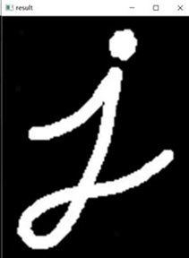

Marine Robotics Computer Vision
Открытая библиотека компьютерного зрения для морских робототехнических систем Marine Robotics Computer Vision (MRCV).
Библиотека, в первую очередь, предназначена для разработчиков роботизированных систем морского назначения, оснащенных системами технического зрения:
морские надводные поисковые дроны;
морские подводные телеуправляемые и автономные аппараты для проведения поисковых, исследовательских, спасательных и археологических работ;
морские подводные роботизированные комплексы для проведения осмотровых, сварочных и мониторинговых работ.
В тоже время, библиотека может полезна разработчикам наземных и воздушных роботизированных систем с системами технического зрения таких как:
роботы доставщики;
воздушные дроны, используемые для мониторинговых задач;
беспилотные транспортные средства.
В состав библиотеки входят как интеллектуальные алгоритмы компьютерного зрения, так и набор алгоритмов, необходимых для подготовки и тестирования аппаратной части комплексов (работа с видеокамерами).
Примеры использования функций модулей размещены в папке examples
Особенность библиотеки состоит в простоте использования и универсальности предлагаемых решений, что в значительной степени должно упростить и ускорить разработку аппаратных комплексов и транспортных систем, оснащенных системами компьютерного зрения.
Проект выполнен при грантовой поддержке Фонда содействия развитию малых форм предприятий в научно-технической сфере.
Дополнительные ссылки
Репозиторий проекта: https://github.com/valabsoft/code-ai-400393
Датасет изображений: https://huggingface.co/datasets/saigon-89/code-ai-400393
Предобученные модели: https://huggingface.co/saigon-89/code-ai-400393
Страница проекта: https://vasoftlab.ru/mrcv/
Рекомедуемая минимальная конфигурация
Для использования библиотеки рекомендуются следующие конфигурации аппаратных средств и операционных систем:
Мини-компьютер
процессор: AMD Ryzen 7 5800H
количество ядер/потоков: 8/16
частота базовая/boost: 3.2 ГГц / 4.4 ГГц
оперативная память DDR4: 16 ГБ
видеокарта: NVIDIA GeForce RTX4070 12 ГБ
ОС: Linux Ubuntu 22.04
Одноплатный компьютер
процессор: ARM Cortex A78AE v8.2 64-разрядный, 1.5 МБ L2 + 4 МБ L3, 1.5 ГГц
количество ядер/потоков: 6
частота базовая: 1.5 ГГц
оперативная память DDR4: 8 ГБ
видеокарта: NVIDIA Ampere с 1024 ядрами и 32 ядрами Tensor, 625 МГц, 4 ГБ
ОС: Linux Ubuntu 18.04
Одноплатный компьютер (без CUDA)
процессор: Broadcom BCM2712 2.4GHz, четыре ядра 64-bit Arm Cortex-A76 CPU, с графическим расширением, 512 КБ на ядро уровня L2 кэш и 2 МБ уровня L3 кэш
количество ядер/потоков: 4
частота базовая: 2.4 ГГц
оперативная память LPDDR4X: 8 ГБ
видеокарта: VideoCore VII GPU с поддержкой OpenGL ES 3.1, Vulkan 1.2, декодирование HEVC 4Kp60, 256 МБ
ОС: Linux Ubuntu 22.04
Note
В случае использования одноплатного компьютера с архитектурой ARM, для полноценной работы всех функций библиотеки, не рекомендуется использование конфигураций, не поддерживающих технологию CUDA. Для таких конфигураций рекомендуется использование только Python-версии библиотеки.
Описание служебных структур
Ниже приведены основные структуры, перечисления и параметры, используемые в библиотеке Marine Robotics Computer Vision для хранения данных, настройки алгоритмов и конфигурации камер.
Перечисления:
enum class METOD_MORF — методы морфологических преобразований: - OPEN, CLOSE, GRADIENT, ERODE, DILAT
enum class CODEC — поддерживаемые видео-кодеки: - XVID, MJPG, mp4v, h265
enum class LOGTYPE — типы записей в лог-файл: - DEBUG, ERROR, EXCEPTION, INFO, WARNING
enum class METOD_INCREASE_IMAGE_CONTRAST — методы повышения контрастности изображения: - EQUALIZE_HIST, CLAHE, CONTRAST_BALANCING, CONTRAST_EXTENSION
enum class COLOR_MODEL — цветовые модели: - CM_RGB, CM_HSV, CM_LAB, CM_YCBCR
enum class METOD_IMAGE_PERPROCESSIN — методы предобработки изображений: - NONE, CONVERTING_BGR_TO_GRAY, … (см. исходный код для полного списка)
enum class METOD_DISPARITY — методы расчёта карты диспаратности: - MODE_NONE, MODE_BM, MODE_SGBM, MODE_SGBM_3WAY, MODE_HH, MODE_HH4
enum class AUGMENTATION_METHOD — методы аугментации изображений: - FLIP_HORIZONTAL, FLIP_VERTICAL, ROTATE_IMAGE_90, и др.
enum class DISPARITY_TYPE — типы выходных данных по диспаратности: - ALL, BASIC_DISPARITY, BASIC_HEATMAP, и др.
Структуры:
cameraParameters — параметры одной камеры
cameraStereoParameters — параметры стерео-камеры
pointsData — структура данных для хранения облака точек и их проекций
parameters3dSceene — параметры построения и отображения 3D сцены
CalibrationParametersMono / Stereo — результат калибровки камеры
CalibrationConfig — параметры для загрузки и настройки калибровки
trainTricks — параметры, влияющие на поведение нейросетевого обучения
settingsMetodDisparity — параметры алгоритма расчёта карты диспаратности
Модуль служебных функций
В данном модуле реализованы вспомогательные функции для работы с изображениями, видео, калибровкой камер и логированием.
Функции работы с изображениями
Функция сравнения изображений
Сравнивает два изображения и возвращает процент различий.
double mrcv::compareImages(cv::Mat img1, cv::Mat img2, bool methodCompare)
Параметры:
img1- первое изображение для сравненияimg2- второе изображение для сравненияmethodCompare- метод сравнения (true/false)
Возвращает: процент различий между изображениями
Функция морфологического преобразования
Применяет морфологические операции к изображению.
int mrcv::morphologyImage(cv::Mat image, std::string out, METOD_MORF metod, int morph_size)
Параметры:
- image - входное изображение
- out - путь для сохранения результата
- metod - тип морфологической операции (OPEN, CLOSE, GRADIENT, ERODE, DILAT)
- morph_size - размер ядра преобразования
Функции работы с видео
Запись видеопотока
Записывает видео с камеры в файл.
int mrcv::recordVideo(int cameraID, int recorderInterval, std::string fileName, CODEC codec)
Параметры:
- cameraID - идентификатор камеры
- recorderInterval - интервал записи в секундах
- fileName - имя файла для сохранения
- codec - используемый кодек (XVID, MJPG, mp4v, h265)
Возвращает: код результата (0 - успех)
Функции калибровки камер
Калибровка одиночной камеры
Выполняет калибровку одной камеры по изображениям шахматной доски.
void mrcv::cameraCalibrationMono(std::vector<cv::String> images, std::string pathToImages,
CalibrationParametersMono& calibrationParameters,
int chessboardColCount, int chessboardRowCount,
float chessboardSquareSize)
Параметры:
images- вектор имен файлов изображенийpathToImages- путь к папке с изображениямиcalibrationParameters- структура для хранения параметров калибровкиchessboardColCount- количество углов по горизонталиchessboardRowCount- количество углов по вертикалиchessboardSquareSize- размер клетки шахматной доски в мм
Калибровка стереопары
Выполняет калибровку стереопары камер.
void mrcv::cameraCalibrationStereo(std::vector<cv::String> imagesL, std::vector<cv::String> imagesR,
std::string pathToImagesL, std::string pathToImagesR,
CalibrationParametersStereo& calibrationParameters,
int chessboardColCount, int chessboardRowCount,
float chessboardSquareSize)
Параметры:
imagesL,imagesR- векторы имен файлов для левой и правой камерpathToImagesL,pathToImagesR- пути к папкам с изображениямиcalibrationParameters- структура для хранения параметров калибровкиchessboardColCount,chessboardRowCount- количество углов доскиchessboardSquareSize- размер клетки в мм
Функции логирования
Запись в лог-файл
Записывает сообщение в лог-файл с указанием типа.
void mrcv::writeLog(std::string logText, LOGTYPE logType = LOGTYPE::INFO)
Параметры:
logText- текст сообщенияlogType- тип сообщения (DEBUG, ERROR, EXCEPTION, INFO, WARNING)
Генерация уникального имени файла
Создает уникальное имя файла на основе текущего времени.
std::string mrcv::generateUniqueFileName(std::string fileName, std::string fileExtension)
Параметры:
fileName- префикс имени файлаfileExtension- расширение файла
Возвращает: строку с уникальным именем файла
Функции работы с изображениями из интернета
Загрузка изображений с Яндекса
Скачивает изображения по запросу из Яндекс.Картинок.
int mrcv::getImagesFromYandex(
std::string query,
int minWidth,
int minHeight,
std::string nameTemplate,
std::string outputFolder,
bool separateDataset,
unsigned int trainsetPercentage,
unsigned int countFoto,
bool money,
std::string key,
std::string secretKey
)
Параметры:
query- строка поискового запросаminWidth,minHeight- минимальные размеры изображенийnameTemplate- шаблон имени файлаoutputFolder- папка для сохраненияseparateDataset- флаг разделения на train/testtrainsetPercentage- процент для обучающей выборкиcountFoto- количество изображений для скачиванияmoney- флаг платного APIkey,secretKey- ключи API
Функции построения карты диспаратности
Построение карты диспаратности
Строит карту диспаратности для стереопары изображений.
int mrcv::disparityMap(cv::Mat& map, const cv::Mat& imageLeft, const cv::Mat& imageRight,
int minDisparity, int numDisparities, int blockSize,
double lambda, double sigma, DISPARITY_TYPE disparityType,
int colorMap, bool saveToFile, bool showImages)
Параметры:
map- выходная карта диспаратностиimageLeft,imageRight- изображения стереопарыminDisparity- минимальная диспаратностьnumDisparities- количество уровней диспаратностиblockSize- размер блока для сравненияlambda,sigma- параметры фильтрацииdisparityType- тип выходной картыcolorMap- цветовая схемаsaveToFile- флаг сохранения в файлshowImages- флаг отображения окон
Возвращает: код результата (0 - успех)
Модуль аугментации
В модуле представлены функции, позволяющие выполнять базовые трансформации изображений, включая поворот, отражение, а также массовую аугментацию.
Функция поворота изображения
Поворачивает изображение на определённый угол с использованием центральной точки.
int mrcv::rotateImage(cv::Mat& imageInput, cv::Mat& imageOutput, double angle)
Описание параметров:
imageInput— входное (исходное) изображениеcv::Mat.imageOutput— выходное (преобразованное) изображениеcv::Mat.angle— угол поворота в градусах.
return — код результата работы функции:
0— успех,1— пустое изображение,2— неизвестный формат изображения,-1— неизвестная ошибка.
Функция отражения изображения
Отражает изображение по горизонтали, вертикали или обеим осям.
int mrcv::flipImage(cv::Mat& imageInput, cv::Mat& imageOutput, int flipCode)
Описание параметров:
imageInput— входное (исходное) изображениеcv::Mat.imageOutput— выходное (преобразованное) изображениеcv::Mat.flipCode— код отражения: -0— вертикальное отражение -1— горизонтальное отражение --1— обе стороны
return — код результата работы функции:
0— успех,1— пустое изображение,2— неизвестный формат изображения,-1— неизвестная ошибка.
Функция аугментации изображений
Выполняет аугментацию набора входных изображений с использованием заданных методов и сохраняет результаты в директорию.
int mrcv::augmetation(std::vector<cv::Mat>& inputImagesAugmetation,
std::vector<cv::Mat>& outputImagesAugmetation,
std::vector<mrcv::AUGMENTATION_METHOD> augmetationMethod)
Описание параметров:
inputImagesAugmetation— вектор входных изображений (cv::Mat) для аугментации.outputImagesAugmetation— вектор, в который сохраняются преобразованные изображения.augmetationMethod— вектор методов аугментацииmrcv::AUGMENTATION_METHOD.
return — код результата работы функции:
0— успех,-1— исключение (OpenCV или файловой системы, или неизвестная ошибка).
Поддерживаемые методы аугментации:
enum class AUGMENTATION_METHOD {
NONE,
FLIP_HORIZONTAL,
FLIP_VERTICAL,
FLIP_HORIZONTAL_AND_VERTICAL,
ROTATE_IMAGE_90,
ROTATE_IMAGE_45,
ROTATE_IMAGE_270,
ROTATE_IMAGE_315,
TEST
};
Каждому из методов соответствует операция трансформации изображения с возможностью сохранения результата на диск.
Модуль кластеризации
В данном модуле реализованы алгоритмы кластеризации 3D-точек, полученных из данных стереокамер. Модуль основан на расчёте евклидовых расстояний между точками и оценке их взаимной близости.
Загрузка данных из файла
Загружает координаты 3D-точек из текстового файла и сохраняет их во внутреннюю структуру данных.
void mrcv::DenseStereo::loadDataFromFile(const std::string& filename)
Описание параметров:
- filename — путь к текстовому файлу с координатами.
Назначение: очищает внутренние данные и заполняет список xyz из файла.
Кластеризация загруженных данных
Выполняет кластеризацию точек в 3D пространстве на основе расстояний между ними.
void mrcv::DenseStereo::makeClustering()
Назначение:
- рассчитывает матрицу расстояний между всеми точками,
- нормализует расстояния,
- формирует логическую матрицу близости L,
- группирует точки в кластеры,
- присваивает каждой точке индекс её кластера,
- сохраняет результат в файл files/clusters_data.txt.
Внутренние параметры:
- IDX — вектор, содержащий индексы кластеров для каждой точки.
Промежуточные структуры: используются многопоточность, нормализация, логические маски.
Печать информации о кластерах
Формирует и записывает в лог информацию о результатах кластеризации.
void mrcv::DenseStereo::printClusters()
Назначение: - выводит количество точек и количество найденных кластеров в лог.
Тип логирования:
- LOGTYPE::INFO
Для хранения результата кластеризации используются поля класса:
- IDX — список принадлежности точек к кластерам,
- vuxyzrgb.xyz — координаты исходных точек.
Модуль сравнения изображений
Модуль предназначен для сравнения двух изображений с использованием различных методов. Поддерживаются два режима: сравнение по HSV-гистограммам и по L2-норме между изображениями.
Сравнение изображений
Выполняет сравнение двух изображений с помощью выбранного метода и возвращает степень их различия.
double mrcv::compareImages(cv::Mat img1, cv::Mat img2, bool methodCompare)
Описание параметров:
img1— первое входное изображение (cv::Mat).img2— второе входное изображение (cv::Mat).methodCompare— флаг выбора метода сравнения:true— сравнение по HSV-гистограммам,false— сравнение по L2-норме.
Назначение:
При
methodCompare == true: - переводит изображения в цветовое пространство HSV, - вычисляет 2D-гистограммы по каналам Hue и Saturation, - нормализует гистограммы и сравнивает их методом корреляции (HISTCMP_CORREL).При
methodCompare == false: - вычисляет евклидово расстояние (L2-норма) между изображениями, - нормализует результат по количеству пикселей.
Возвращаемое значение:
double— степень схожести изображений: - при HSV-сравнении: значение корреляции (в диапазоне от -1 до 1), - при L2-сравнении: значение от0(максимальное различие) до1(идентичность).
Промежуточные структуры:
hsv1,hsv2— изображения в HSV-пространстве,hist1,hist2— рассчитанные гистограммы для сравнения.
Модуль детекции изображений
Модуль реализует полную архитектуру сверточной нейронной сети YOLO для задач детекции объектов. Предусмотрены функции обучения, валидации, предсказания, загрузки весов, работы с аннотациями, подготовки датасета, и визуализации результатов.
Инициализация детектора
Задает параметры устройства, загружает список меток и подготавливает модель для работы.
void mrcv::Detector::Initialize(int gpuID, int width, int height, std::string nameListPath)
Описание параметров:
gpuID— индекс устройства GPU (-1 — использовать CPU).width— ширина входного изображения (должна быть кратна 32).height— высота входного изображения (должна быть кратна 32).nameListPath— путь к файлу с названиями классов.
Назначение: загружает имена классов, настраивает вычислительное устройство и инициализирует модель YoloBody_tiny.
Загрузка предобученной модели
Загружает веса модели из заданного файла.
int mrcv::Detector::LoadPretrained(std::string pretrainedPath)
Назначение: частично загружает веса, исключая выходные слои yolo_head, и копирует параметры в текущую модель.
Обучение модели
Обучает модель на обучающем датасете.
int mrcv::Detector::Train(std::string trainValPath, std::string imageType,
int numEpochs, int batchSize, float learningRate,
std::string savePath, std::string pretrainedPath)
Назначение:
загружает датасет в формате XML,
запускает цикл обучения и валидации,
на каждом этапе сохраняет веса модели в
savePath,использует функции потерь
YOLOLossImpl.
Внутренние зависимости:
DetDataset— загрузка и предобработка данных,YOLOLossImpl— расчёт функции потерь,YoloBody_tiny— модель YOLO.
Автоматический подбор гиперпараметров
Выполняет автоматический перебор комбинаций параметров обучения и выбирает наилучшие.
int mrcv::Detector::AutoTrain(std::string trainValPath, std::string imageType,
std::vector<int> epochsList, std::vector<int> batchSizes,
std::vector<float> learningRates, std::string pretrainedPath,
std::string savePath)
Назначение: выбирает комбинацию epochs, batchSize и learningRate с минимальной ошибкой на валидации.
Предсказание и визуализация
Выполняет предсказание объектов на изображении и сохраняет визуализацию.
int mrcv::Detector::Predict(cv::Mat image, bool show, float confThresh, float nmsThresh)
Назначение:
выполняет предсказание с использованием модели,
масштабирует результат обратно к исходному изображению,
применяет NMS (Non-Maximum Suppression),
отображает или сохраняет результат визуализации (файл
prediction.jpg).
Тип логирования:
LOGTYPE::INFOпри успешной обработке,LOGTYPE::ERRORпри ошибках устройства, путей и пр.
Промежуточные функции:
DecodeBox— расшифровка выхода YOLO,nonMaximumSuppression— удаление пересекающихся боксов,showBbox— отображение результатов детекции.
Валидация модели
Оценивает модель на отложенном датасете и возвращает среднюю ошибку.
float mrcv::Detector::Validate(std::string valDataPath, std::string imageType, int batchSize)
Назначение: используется при автоматическом подборе гиперпараметров и в процессе отладки модели.
Модуль предварительной обработки изображений
Данный модуль содержит функции для предварительной обработки изображений, включая коррекцию яркости, контраста, резкости, фильтрацию шумов и геометрическую коррекцию.
Функция создания изображения с сообщением об ошибке
Создаёт изображение с текстом ошибки для отображения при возникновении проблем.
cv::Mat mrcv::getErrorImage(std::string textError)
Описание параметров:
textError- текст сообщения об ошибке.
Возвращаемое значение: - Изображение размером 600x960 с текстом ошибки.
Коррекция яркости изображения
Применяет гамма-коррекцию для изменения яркости изображения.
int mrcv::changeImageBrightness(cv::Mat& imageInput, cv::Mat& imageOutput, double gamma)
Описание параметров:
imageInput- входное изображение.imageOutput- выходное изображение после коррекции.gamma- параметр гамма-коррекции (значения <1 увеличивают яркость, >1 уменьшают).
Возвращаемые коды:
0- успешное выполнение1- пустое входное изображение-1- необработанное исключение
Увеличение резкости (метод Лапласа)
Увеличивает резкость изображения с использованием оператора Лапласа.
int mrcv::sharpeningImage01(cv::Mat& imageInput, cv::Mat& imageOutput, double gainFactorHighFrequencyComponent)
Описание параметров:
gainFactorHighFrequencyComponent- коэффициент усиления высокочастотных компонент.
Возвращаемые коды:
0- успешное выполнение1- пустое входное изображение-1- необработанное исключение
Увеличение резкости (метод Гаусса)
Увеличивает резкость изображения с использованием размытия по Гауссу.
int mrcv::sharpeningImage02(cv::Mat& imageInput, cv::Mat& imageOutput, cv::Size filterSize, double sigmaFilter, double gainFactorHighFrequencyComponent)
Описание параметров:
filterSize- размер ядра фильтра.sigmaFilter- параметр размытия.gainFactorHighFrequencyComponent- коэффициент усиления высокочастотных компонент.
Основная функция предварительной обработки
Применяет последовательность методов обработки к изображению согласно переданному списку.
int mrcv::preprocessingImage(cv::Mat& image, std::vector<mrcv::METOD_IMAGE_PERPROCESSIN> metodImagePerProcessing, const std::string& pathToFileCameraParametrs)
Поддерживаемые методы обработки:
CONVERTING_BGR_TO_GRAY- преобразование в градации серогоBRIGHTNESS_LEVEL_UP/DOWN- коррекция яркостиBALANCE_CONTRAST_*- различные методы коррекции контрастаSHARPENING_*- методы увеличения резкостиNOISE_FILTERING_*- методы фильтрации шумовCORRECTION_GEOMETRIC_DEFORMATION- геометрическая коррекция
Параметры:
metodImagePerProcessing- вектор методов обработки для применения.pathToFileCameraParametrs- путь к файлу параметров камеры для геометрической коррекции.
Увеличение контраста изображения
Применяет различные методы увеличения контраста в разных цветовых пространствах.
int mrcv::increaseImageContrast(cv::Mat& imageInput, cv::Mat& imageOutput, mrcv::METOD_INCREASE_IMAGE_CONTRAST metodIncreaseContrast, mrcv::COLOR_MODEL colorSpace, double clipLimitCLAHE, cv::Size gridSizeCLAHE, float percentContrastBalance, double mContrastExtantion, double eContrastExtantion)
Поддерживаемые методы:
EQUALIZE_HIST- эквализация гистограммыCLAHE- адаптивная эквализация гистограммыCONTRAST_BALANCING- балансировка контрастаCONTRAST_EXTENSION- расширение контраста
Поддерживаемые цветовые пространства:
CM_HSVCM_LABCM_YCBCRCM_RGB
Балансировка контраста
Выполняет балансировку контраста изображения по заданному проценту.
int mrcv::contrastBalancing(cv::Mat& planeArray, float percent)
Параметры:
percent- процент обрезки гистограммы (0-100).
Расширение контраста
Применяет нелинейное преобразование для расширения динамического диапазона.
int mrcv::contrastExtantion(cv::Mat& planeArray, double m, double e)
Параметры:
m- среднее значение (если <0, вычисляется автоматически)e- параметр экспоненты
Модуль морфологических преобразований
Данный модуль содержит функции для выполнения морфологических операций над изображениями, включая открытие, закрытие, эрозию, расширение и градиент.
Основная функция морфологических преобразований
Применяет выбранную морфологическую операцию к изображению.
int mrcv::morphologyImage(cv::Mat image, std::string out, mrcv::METOD_MORF metod, int morph_size)
Описание параметров:
image- входное изображение для обработкиout- путь для сохранения результатаmetod- тип морфологической операции: -OPEN- открытие -CLOSE- закрытие -DILAT- расширение -ERODE- эрозия -GRADIENT- градиентmorph_size- размер структурного элемента
Возвращаемое значение: - 0 - успешное выполнение
Функция морфологического открытия
Выполняет операцию открытия (эрозия с последующим расширением).
int mrcv::openingMorphological(cv::Mat image, std::string out, cv::Mat element)
Описание параметров:
element- структурный элемент для операции
Функция морфологического закрытия
Выполняет операцию закрытия (расширение с последующей эрозией).
int mrcv::closingMorphological(cv::Mat image, std::string out, cv::Mat element)
Функция морфологического градиента
Выполняет операцию морфологического градиента (разница между расширением и эрозией).
int mrcv::gradientMorphological(cv::Mat image, std::string out, cv::Mat element)
Функция морфологической эрозии
Выполняет операцию эрозии (сужение светлых областей).
int mrcv::erodeMorphological(cv::Mat image, std::string out, cv::Mat element)
Функция морфологического расширения
Выполняет операцию расширения (расширение светлых областей).
int mrcv::dilationMorphological(cv::Mat image, std::string out, cv::Mat element)
Все функции:
Создают структурный элемент заданного размера
Применяют соответствующую морфологическую операцию
Сохраняют результат по указанному пути
Возвращают 0 при успешном выполнении
Типы структурных элементов:
Используется прямоугольный элемент (MORPH_RECT)
Размер элемента вычисляется как 2*morph_size + 1
Модуль расчета курса объекта
Данный модуль реализует функционал для детекции объектов и расчета курса движения относительно обнаруженных целей с использованием нейронных сетей.
Класс ObjCourse
Основные функции:
Инициализация нейронной сети
Загружает модель нейронной сети и файл с классами объектов.
int ObjCourse::initNN(const std::string pathToModel, const std::string pathToClasses)
Параметры:
- pathToModel - путь к файлу модели ONNX
- pathToClasses - путь к файлу с классами объектов
Возвращаемые значения: - 0 - успешная инициализация - ENETDOWN - ошибка загрузки модели - ENOENT - ошибка загрузки файла классов
Основной процесс обработки
Выполняет полный цикл обработки изображения: предобработку, детекцию и постобработку.
cv::Mat ObjCourse::mainProcess(cv::Mat& img)
Возвращаемое значение: - Обработанное изображение с отмеченными объектами
Расчет курса
Определяет угол между центром кадра и обнаруженным объектом.
float ObjCourse::getObjectCourse(cv::Mat frame, double frameWidth, double cameraAngle)
Параметры:
- frame - входное изображение
- frameWidth - ширина кадра
- cameraAngle - угол обзора камеры
Возвращаемое значение: - Угол отклонения объекта от центра (в градусах)
Вспомогательные функции:
Предобработка изображения
Подготавливает изображение для подачи в нейронную сеть.
std::vector<cv::Mat> ObjCourse::preProcess(cv::Mat& img, cv::dnn::Net& net)
Постобработка результатов
Анализирует выход нейронной сети и выделяет обнаруженные объекты.
cv::Mat ObjCourse::postProcess(cv::Mat& img, std::vector<cv::Mat>& outputs, const std::vector<std::string>& classNames)
Отрисовка меток
Добавляет подписи к обнаруженным объектам на изображении.
void ObjCourse::drawLabel(cv::Mat& img, std::string label, int left, int top)
Технические параметры:
_inputWidth,_inputHeight- размеры входного изображения для нейросети_scoreThreshold- порог уверенности для детекции_nmsThreshold- порог для подавления немаксимумов_confidenceThreshold- минимальный уровень достоверности_cameraAngle- угол обзора камеры
Модуль сегментации изображений
Модуль реализует функционал семантической сегментации изображений с использованием архитектуры FPN (Feature Pyramid Network) на базе предобученных моделей ResNet.
Архитектура FPN
FPNImpl - основной класс, реализующий архитектуру Feature Pyramid Network.
class FPNImpl : public torch::nn::Module
Компоненты: - Энкодер (ResNet) для извлечения признаков - Декодер для построения пирамиды признаков - Голова сегментации для генерации масок
Инициализация:
FPNImpl(int _numberClasses, std::string encoderName, std::string pretrainedPath,
int encoderDepth, int decoderChannelPyramid, int decoderChannelsSegmentation,
std::string decoderMergePolicy, float decoder_dropout, double upsampling)
Параметры:
- _numberClasses - количество классов сегментации
- encoderName - имя модели энкодера (resnet18, resnet34, resnet50)
- pretrainedPath - путь к предобученным весам
- encoderDepth - глубина энкодера (3-5)
Класс Segmentor
Основной интерфейс для работы с сегментацией:
Инициализация
void Segmentor::Initialize(int gpu_id, int _width, int _height,
std::vector<std::string>&& _listName,
std::string encoderName, std::string pretrainedPath)
Параметры:
- gpu_id - идентификатор GPU (-1 для CPU)
- _width, _height - размеры входного изображения
- _listName - список классов сегментации
- encoderName - имя модели энкодера
- pretrainedPath - путь к предобученным весам
Обучение модели
void Segmentor::Train(float learning_rate, unsigned int epochs, int batch_size,
std::string train_val_path, std::string imageType, std::string save_path)
Параметры обучения:
- learning_rate - начальная скорость обучения
- epochs - количество эпох
- batch_size - размер батча
- train_val_path - путь к данным обучения/валидации
- imageType - расширение изображений (“.jpg”, “.png”)
- save_path - путь для сохранения модели
Загрузка весов
void Segmentor::LoadWeight(std::string pathWeight)
Предсказание
void Segmentor::Predict(cv::Mat& image, const std::string& which_class)
Параметры:
- image - входное изображение
- which_class - имя класса для визуализации
Вспомогательные классы
SegDataset Класс для работы с данными сегментации
class SegDataset : public torch::data::Dataset<SegDataset>
Функционал: - Загрузка изображений и масок - Аугментация данных - Преобразование в тензоры
Augmentations
Класс для аугментации данных
class Augmentations
Методы:
- Resize - изменение размера изображения и маски
Функции потерь
DiceLoss
torch::Tensor DiceLoss(torch::Tensor prediction, torch::Tensor target, int classNum)
CELoss
torch::Tensor CELoss(torch::Tensor prediction, torch::Tensor target)
Модуль создания 3D сцен
Модуль предоставляет функционал для обработки стереоизображений, построения 3D сцен и работы с облаками точек. Включает методы калибровки, построения карт диспаратности, сегментации объектов и визуализации.
Формирование стереопары
Объединяет изображения с двух камер в единое изображение для обработки.
int mrcv::makingStereoPair(cv::Mat& inputImageCamera01, cv::Mat& inputImageCamera02, cv::Mat& outputStereoPair)
Параметры:
inputImageCamera01- изображение с левой камеры (CV_8UC3)inputImageCamera02- изображение с правой камеры (CV_8UC3)outputStereoPair- результирующее объединенное изображение
Возвращаемые значения:
0- успех1- пустое изображение-1- ошибка
Особенности:
Автоматический расчет размеров выходного изображения
Горизонтальное объединение изображений
Поддержка разных размеров входных изображений
Построение карты диспаратности
Вычисляет карту различий между стереоизображениями.
int mrcv::find3dPointsADS(cv::Mat& inputImageCamera01, cv::Mat& inputImageCamera02,
mrcv::pointsData& points3D, mrcv::settingsMetodDisparity& settingsMetodDisparity,
cv::Mat& disparityMap, mrcv::cameraStereoParameters& cameraParameters,
int limitOutPoints, std::vector<double> limitsOutlierArea)
Методы построения:
MODE_BM- блочное сопоставление (быстрый)MODE_SGBM- полуглобальное сопоставлениеMODE_HH- двухпроходный алгоритм
Особенности:
Фильтрация выбросов по заданной области
Ограничение количества выходных точек
Поддержка различных цветовых карт
Сегментация объектов
Обнаружение и сегментация объектов нейронной сетью.
int mrcv::detectingSegmentsNeuralNet(cv::Mat& imageInput, cv::Mat& imageOutput,
std::vector<cv::Mat>& replyMasks, const std::string filePathToModelYoloNeuralNet,
const std::string filePathToClasses)
Особенности:
Использование модели YOLO
Возврат бинарных масок объектов
Настройка порогов уверенности
Морфологическая постобработка масок
Визуализация 3D сцены
Проецирование 3D точек на 2D изображение.
int mrcv::getImage3dSceene(mrcv::pointsData& points3D,
mrcv::parameters3dSceene& parameters3dSceene,
mrcv::cameraStereoParameters& cameraParameters,
cv::Mat& outputImage3dSceene)
Параметры сцены:
Углы поворота (angX/Y/Z)
Смещение (tX/Y/Z)
Масштаб (scale)
Расстояние до центра (dZ)
Сохранение результатов
Экспорт данных о 3D точках.
int mrcv::saveInFile3dPointsInObjectsSegments(pointsData& points3D,
const cv::String pathToFile)
Формат данных:
Координаты пикселей и 3D координаты
Цвет точек
Идентификаторы сегментов
Модуль работы с YOLOv5
Модуль предоставляет инструменты для работы с моделями YOLOv5, включая интерактивную разметку данных, генерацию конфигурационных файлов и настройку гиперпараметров.
Интерактивная разметка данных
Инструмент для создания разметки объектов на изображениях в формате YOLO.
void mrcv::YOLOv5LabelerProcessing(const std::string &inputDir, const std::string &outputDir)
Параметры:
inputDir- путь к директории с исходными изображениямиoutputDir- путь для сохранения файлов разметки
Функционал:
Поддержка форматов JPG и PNG
Интерактивный интерфейс с возможностью: - Рисования bounding box’ов - Редактирования существующих рамок - Изменения класса объектов - Удаления ошибочных разметок
Автоматическое сохранение в YOLO-формате (нормализованные координаты)
Генерация конфигурации модели
Создание конфигурационного файла модели YOLOv5 в формате YAML.
void mrcv::YOLOv5GenerateConfig(YOLOv5Model model, const std::string &outputFile, unsigned int nc = 1)
Поддерживаемые модели:
YOLOv5n- nano (наименьшая)YOLOv5s- smallYOLOv5m- mediumYOLOv5l- largeYOLOv5x- extra large
Содержимое конфига:
Параметры масштабирования (depth/width multiple)
Якорные рамки (anchors)
Архитектура backbone и head сети
Количество классов (nc)
Генерация гиперпараметров
Создание файла с оптимальными гиперпараметрами для обучения.
void mrcv::YOLOv5GenerateHyperparameters(YOLOv5Model model,
unsigned int imgWidth, unsigned int imgHeight,
const std::string &outputFile, unsigned int nc = 1)
Настраиваемые параметры:
weight_decay- коэффициент регуляризацииbox/cls/obj- веса для разных компонентов loss-функцииanchor_t- порог для якорных рамокfl_gamma- параметр focal loss
Особенности:
Автоматическая адаптация под: - Размер модели - Разрешение изображений - Количество классов
Сохранение в YAML-формате
Подготовка к работе
Установка и настройка зависимостей
Для работы с библиотекой используется версия OpenCV 4.10, которая должна быть предварительно собрана и установлена на исполняемой платформе с операционными системами Windows или Linux. Для поддержки CUDA сборка OpenCV должна проводиться с установленными CUDA 12.4 и cuDNN 9.3. Для сборки должна быть использована версия CMake не ниже 3.14. Также для работы с библиотекой требуется libtorch 2.4.0. При этом сборка с CUDA или без определяется установочным пакетом от разработчиков libtorch.
Установка и первоначальная настройка библиотеки
Для операционной системы Windows без поддержки CUDA
Необходимо выполнить следующий ряд действий:
Установить необходимые компоненты:
CMake GUI 3.30.0-rc4 или новее с официального сайта (доступен по ссылке https://cmake.org/download/)
Git Bash (доступен по ссылке https://gitforwindows.org/)
Visual Studio 2022 Community Edition с компонентом Desktop development with C++ (доступен по ссылке https://visualstudio.microsoft.com/)
yaml-cpp при помощи консольных инструкций:
cd C:\ git clone https://github.com/jbeder/yaml-cpp.git cd yaml-cpp mkdir build cd build cmake .. -DYAML_CPP_BUILD_TESTS=OFF -DYAML_CPP_INSTALL=ON cmake --build . --config Release cmake --install . --prefix "C:\yaml-cpp"
LibTorch 2.4.0 без поддержки CUDA (https://download.pytorch.org/libtorch/cpu/libtorch-win-shared-with-deps-2.4.0%2Bcpu.zip). После скачивания архива распакуйте его содержимое в папку
C:\libtorch-12.4, переименуйте папкуC:\libtorch-12.4\libtorchвC:\libtorch-12.4\Release.
скачайте готовую сборку OpenCV 4.10.0 с официального сайта (https://opencv.org/releases/). Распакуйте содержимое папки build архива и скопируйте в
C:\opencv-4.10.0-build\install
Для установки библиотеки MRCV необходимо выполнить следующие действия:
Клонировать актуальную версию проекта, используя команды:
cd ~ git clone --branch main https://github.com/valabsoft/code-ai-400393.git
Установить зависимости: libtorch, OpenCV, yaml-cpp (отображены рекомендованные пути для ОС Windows):
C:\ ├───libtorch-12.4 ├───opencv-4.10.0-build └───yaml-cpp
Для корректной работы библиотеки под управлением операционной системы Windows необходимо прописать системные пути в переменные окружения:
C:\opencv-4.10.0-build\install\x64\vc17\bin\ C:\libtorch-12.4\Release\bin\
Настроить сборку, отключив поддержку CUDA. Для этого отредактировать CMakeLists.txt проекта
option(USE_CUDA "Use CUDA Build" OFF)
Запустить проект от имени администратора и открыть mrcv как локальную папку (File → Open → Folder)
Настройте CMakeLists.txt и CMakeLists.txt в каждом примере в папке examples, убедившись, что пути к libtorch, opencv и yaml-cpp указаны корректно (см. пример ниже)
if(USE_CUDA) # Добавляем макрос MRCV_CUDA_ENABLED target_compile_definitions(mrcv PRIVATE MRCV_CUDA_ENABLED) if(WIN32) set(CMAKE_PREFIX_PATH "C:/libtorch-12.4-cuda/Release;C:/yaml-cpp") set(OpenCV_DIR "C:/opencv-4.10.0-build-cuda/install") set(Torch_DIR "C:/libtorch-12.4-cuda/Release/share/cmake/Torch") set(OpenCV_INCLUDE_DIRS "C:/opencv-4.10.0-build-cuda/install/include") set(OpenCV_LIB_DIR "C:/opencv-4.10.0-build-cuda/install/x64/vc17/lib") set(Torch_INCLUDE_DIRS "C:/libtorch-12.4-cuda/Release/include") set(Torch_LIB_DIR "C:/libtorch-12.4-cuda/Release/lib") else() set(Torch_DIR "/opt/libtorch/share/cmake/Torch") set(OpenCV_INCLUDE_DIRS "/usr/local/include/opencv4") set(OpenCV_LIB_DIR "/usr/local/lib") set(Torch_INCLUDE_DIRS "/usr/local/include/torch") set(Torch_LIB_DIR "/usr/local/lib") endif() else() if(WIN32) set(CMAKE_PREFIX_PATH "C:/libtorch-12.4/Release;C:/yaml-cpp") set(OpenCV_DIR "C:/opencv-4.10.0-build/install") set(Torch_DIR "C:/libtorch-12.4/Release/share/cmake/Torch") set(OpenCV_INCLUDE_DIRS "C:/opencv-4.10.0-build/install/include") set(OpenCV_LIB_DIR "C:/opencv-4.10.0-build/install/x64/vc17/lib") set(Torch_INCLUDE_DIRS "C:/libtorch-12.4/Release/include") set(Torch_LIB_DIR "C:/libtorch-12.4/Release/lib") else() set(Torch_DIR "/opt/libtorch/share/cmake/Torch") set(OpenCV_INCLUDE_DIRS "/usr/local/include/opencv4") set(OpenCV_LIB_DIR "/usr/local/lib") set(Torch_INCLUDE_DIRS "/usr/local/include/torch") set(Torch_LIB_DIR "/usr/local/lib") endif() endif()Выбрать в Visual Studio конфигурацию сборки dev-win;
В разделе «Сборка» выбрать «Собрать проект»;
После успешной сборки в разделе «Сборка» выбрать «Установить mrcv».
Для операционной системы Windows с поддержкой CUDA
Необходимо выполнить следующий ряд действий:
Установить необходимые компоненты:
CMake GUI 3.30.0-rc4 или новее с официального сайта (доступен по ссылке https://cmake.org/download/)
Git Bash (доступен по ссылке https://gitforwindows.org/)
Visual Studio 2022 Community Edition с компонентом Desktop development with C++ (доступен по ссылке https://visualstudio.microsoft.com/)
yaml-cpp при помощи консольных инструкций:
cd C:\ git clone https://github.com/jbeder/yaml-cpp.git cd yaml-cpp mkdir build cd build cmake .. -DYAML_CPP_BUILD_TESTS=OFF -DYAML_CPP_INSTALL=ON cmake --build . --config Release cmake --install . --prefix "C:\yaml-cpp"
LibTorch 2.4.0 с поддержкой CUDA 12.4 (доступна по ссылке: https://download.pytorch.org/libtorch/cu124/libtorch-win-shared-with-deps-2.4.0%2Bcu124.zip). После скачивания архива распакуйте его содержимое в папку
C:\libtorch-12.4-cuda, переименуйте папкуC:\libtorch-12.4\libtorchвC:\libtorch-12.4\Release.CUDA Toolkit 12.4 (доступ по ссылке https://developer.nvidia.com/cuda-12-4-0-download-archive). Установите CUDA Toolkit в папку по умолчанию:
C:\Program Files\NVIDIA GPU Computing Toolkit\CUDA\v12.4.cuDNN 9.3.0 (доступ по ссылке https://developer.nvidia.com/cudnn-9-3-0-download-archive?target_os=Windows&target_arch=x86_64) Необходимо скачать архив с тремя папками: bin, include, lib. Их нужно скопировать в папку установки CUDA Toolkit 12.4. Путь по умолчанию:
C:\Program Files\NVIDIA GPU Computing Toolkit\CUDA\v12.4.
Клонировать репозитории с версией OpenCV 4.10:
git clone https://github.com/opencv/opencv.git -b "4.10.0" git clone https://github.com/opencv/opencv_contrib.git -b "4.10.0"
Создайте папку
C:\opencv-4.10.0-build-cuda\installи перенесите в нее скачанные opencv и opencv_contrib.Создать пустые директории для сборки библиотеки
C:\opencv-4.10.0-build-cuda\install\opencv\buildиC:\opencv-4.10.0-build-cuda\install\bin.Запустить CMake-GUI.
Выбрать компилятор Visual Studio 17 2022.

В полях Where is the source code и Where is the build binaries указать пути к папке с исходниками OpenCV и созданной папке build. Например, папка
installсодержит собранные материалы библиотеки OpenCV и экстра модулей.Нажать Configure.
После успешного конфигурирования найти и выставить параметры:
CMAKE_INSTALL_PREFIX->C:/opencv-4.10.0-build-cuda/installEXECUTABLE_OUTPUT_PATH->C:/opencv-4.10.0-build-cuda/install/binOPENCV_EXTRA_MODULES_PATH->C:/opencv-4.10.0-build-cuda/install/opencv_contrib/modulesОтметить галочкой
WITH_CUDA
Примечание: Если переменные отсутствуют в перечне, нужно поставить галочку в пункте Advanced.
Нажать Configure и выставить дополнительные параметры:
Отметить
CUDA_FAST_MATH,OPENCV_DNN_CUDA,ENABLE_FAST_MATH,WITH_OPENGLСнять галочки с
WITH_NVCUVENC,WITH_NVCUVID,WITH_VTKУказать архитектуру видеокарты в
CUDA_ARCH_BIN(например, 7.5 для NVIDIA RTX 20xx)Если cuDNN установлен в нестандартном месте, указать пути:
CUDNN_LIBRARY-> путь к файлуcudnn.libCUDNN_INCLUDE_DIR-> путь к папкеincludecuDNN
Нажать Generate.
После генерации нажать Open Project для запуска проекта Visual Studio.
В обозревателе решений Visual Studio в папке CMakeTargets нажать правой кнопкой на ALL_BUILD и выбрать Build.

После успешной сборки выполнить сборку конфигурации INSTALL.
Для установки библиотеки MRCV необходимо выполнить следующие действия:
Клонировать актуальную версию проекта, используя команды:
cd ~ git clone --branch main https://github.com/valabsoft/code-ai-400393.git
Установить зависимости (CUDA Toolkit 12.4 и cuDNN 9.3) библиотеки, указанные ранее: libtorch, OpenCV, yaml-cpp (отображены рекомендованные пути для ОС Windows):
C:\ ├───libtorch-12.4-cuda ├───opencv-4.10.0-build-cuda └───yaml-cpp
Для корректной работы библиотеки под управлением операционной системы Windows необходимо прописать системные пути в переменные окружения:
C:\opencv-4.10.0-build-cuda\install\x64\vc17\bin C:\libtorch-12.4-cuda\Release\bin C:\Program Files\NVIDIA GPU Computing Toolkit\CUDA\v12.4\bin
Настроить сборку, установив ключ поддержки CUDA. Для этого отредактировать CMakeLists.txt проекта
option(USE_CUDA "Use CUDA Build" ON)
Запустить проект от имени администратора и открыть mrcv как локальную папку (File → Open → Folder);
Настройте CMakeLists.txt и CMakeLists.txt в каждом примере в папке examples, убедившись, что пути к libtorch, opencv и yaml-cpp указаны корректно (см. пример ниже)
if(USE_CUDA) # Добавляем макрос MRCV_CUDA_ENABLED target_compile_definitions(mrcv PRIVATE MRCV_CUDA_ENABLED) if(WIN32) set(CMAKE_PREFIX_PATH "C:/libtorch-12.4-cuda/Release;C:/yaml-cpp") set(OpenCV_DIR "C:/opencv-4.10.0-build-cuda/install") set(Torch_DIR "C:/libtorch-12.4-cuda/Release/share/cmake/Torch") set(OpenCV_INCLUDE_DIRS "C:/opencv-4.10.0-build-cuda/install/include") set(OpenCV_LIB_DIR "C:/opencv-4.10.0-build-cuda/install/x64/vc17/lib") set(Torch_INCLUDE_DIRS "C:/libtorch-12.4-cuda/Release/include") set(Torch_LIB_DIR "C:/libtorch-12.4-cuda/Release/lib") else() set(Torch_DIR "/opt/libtorch/share/cmake/Torch") set(OpenCV_INCLUDE_DIRS "/usr/local/include/opencv4") set(OpenCV_LIB_DIR "/usr/local/lib") set(Torch_INCLUDE_DIRS "/usr/local/include/torch") set(Torch_LIB_DIR "/usr/local/lib") endif() else() if(WIN32) set(CMAKE_PREFIX_PATH "C:/libtorch-12.4/Release;C:/yaml-cpp") set(OpenCV_DIR "C:/opencv-4.10.0-build/install") set(Torch_DIR "C:/libtorch-12.4/Release/share/cmake/Torch") set(OpenCV_INCLUDE_DIRS "C:/opencv-4.10.0-build/install/include") set(OpenCV_LIB_DIR "C:/opencv-4.10.0-build/install/x64/vc17/lib") set(Torch_INCLUDE_DIRS "C:/libtorch-12.4/Release/include") set(Torch_LIB_DIR "C:/libtorch-12.4/Release/lib") else() set(Torch_DIR "/opt/libtorch/share/cmake/Torch") set(OpenCV_INCLUDE_DIRS "/usr/local/include/opencv4") set(OpenCV_LIB_DIR "/usr/local/lib") set(Torch_INCLUDE_DIRS "/usr/local/include/torch") set(Torch_LIB_DIR "/usr/local/lib") endif() endif()Выбрать конфигурацию сборки dev-win;
В разделе «Сборка» выбрать «Собрать проект»;
После успешной сборки в разделе «Сборка» выбрать «Установить mrcv».
Для операционной системы Linux (Ubuntu) без поддержки CUDA (пошаговая версия)
Необходимо выполнить следующий ряд действий:
Установить зависимости с помощью набора команд
sudo apt update sudo apt install -y unzip wget curl build-essential cmake git libgtk2.0-dev pkg-config libavcodec-dev libavformat-dev libswscale-dev libtbb2 libtbb-dev libjpeg-dev libpng-dev libtiff-dev libdc1394-dev
Установить библиотеку yaml-cpp
cd ~ git clone https://github.com/jbeder/yaml-cpp.git cd yaml-cpp cmake . make -j$(nproc) sudo make install
Установить библиотеку OpenCV
Выполнить команды:
cd ~
git clone https://github.com/opencv/opencv.git -b "4.10.0"
git clone https://github.com/opencv/opencv_contrib.git -b "4.10.0"
mkdir -p opencv/build && cd opencv/build
cmake -D CMAKE_BUILD_TYPE=Release \
-D CMAKE_INSTALL_PREFIX=/usr/local \
-D OPENCV_EXTRA_MODULES_PATH=../../opencv_contrib/modules \
..
sudo make -j$(nproc)
sudo make install
Сборка осуществляется в папке build. При возникновении ошибок необходимо очистить папки build и .cache.
Установить библиотеку LibTorch
Скачать соответсвующий архив с библиотекой:
cd ~ curl -L "https://download.pytorch.org/libtorch/cpu/libtorch-cxx11-abi-shared-with-deps-2.4.0%2Bcpu.zip" -o libtorch-library.zip
Распаковать архив libtorch-library.zip с помощью команды:
sudo unzip -o libtorch-library.zip -d /opt/
Добавить путь к libtorch в динамический компоновщик с помощью команды
sudo sh -c "echo '/opt/libtorch/lib' >> /etc/ld.so.conf.d/libtorch.conf"
Обновить кэш динамического компоновщика с помощью команды:
sudo ldconfig
Добавить путь к заголовочным файлам и библиотекам в переменные окружения, отредактировав файл ~/.bashrc, открыв его при помощи команды
sudo nano ~/.bashrc
и записав конец следующие строки:
export TORCH_INCLUDE=/opt/libtorch/include
export TORCH_LIB=/opt/libtorch/lib
export LD_LIBRARY_PATH=$LD_LIBRARY_PATH:$TORCH_LIB
export CPATH=$CPATH:$TORCH_INCLUDE
export Torch_DIR=/opt/libtorch/share/cmake/Torch
затем сохранив (Ctrl + O, Ctrl + X) необходимо активировать изменения при помощи команды
source ~/.bashrc
Убедиться в правильности установки можно используя инструкцию https://docs.pytorch.org/cppdocs/installing.html. При нехватке системных ресурсов при сборке рекомендуется запускать сборку через make без указания параметра -j.
Для установки библиотеки MRCV необходимо выполнить следующие действия:
Клонировать актуальную версию проекта, используя команды:
cd ~ git clone --branch main https://github.com/valabsoft/code-ai-400393.git
Установить библиотеки, указанные ранее
Выполнить команды
cd ~/code-ai-400393 mkdir -p build && cd build cmake .. make -j$(nproc) sudo make install sudo ldconfig -v
Для операционной системы Linux (Ubuntu) без поддержки CUDA (версия с помощью скрипта)
Для установки библиотеки MRCV вместе с требующимися зависимостями возможно запустить shell-скрипт. Для этого нужно создать файл с помощью последовательности команд
cd ~ nano install_cpu.sh
Вставить код, предстваленный ниже, в файл
#!/bin/bash set -e sudo apt update sudo apt install -y unzip wget curl build-essential cmake git \ libgtk2.0-dev pkg-config libavcodec-dev libavformat-dev libswscale-dev \ libtbb2 libtbb-dev libjpeg-dev libpng-dev libtiff-dev libdc1394-dev cd ~ if [ ! -d yaml-cpp ]; then git clone https://github.com/jbeder/yaml-cpp.git fi cd yaml-cpp cmake . make -j$(nproc) sudo make install cd ~ if [ ! -f libtorch-library.zip ]; then curl -L "https://download.pytorch.org/libtorch/cpu/libtorch-cxx11-abi-shared-with-deps-2.4.0%2Bcpu.zip" -o libtorch-library.zip fi sudo unzip -o libtorch-library.zip -d /opt/ TORCH_CONF="/etc/ld.so.conf.d/libtorch.conf" if ! grep -q "/opt/libtorch/lib" "$TORCH_CONF" 2>/dev/null; then echo "/opt/libtorch/lib" | sudo tee "$TORCH_CONF" sudo ldconfig fi BASHRC="$HOME/.bashrc" ENV_MARK="# BEGIN TORCH ENV" if ! grep -q "$ENV_MARK" "$BASHRC"; then echo "$ENV_MARK" >> "$BASHRC" echo "export TORCH_INCLUDE=/opt/libtorch/include" >> "$BASHRC" echo "export TORCH_LIB=/opt/libtorch/lib" >> "$BASHRC" echo "export LD_LIBRARY_PATH=\$LD_LIBRARY_PATH:\$TORCH_LIB" >> "$BASHRC" echo "export CPATH=\$CPATH:\$TORCH_INCLUDE" >> "$BASHRC" echo "export Torch_DIR=/opt/libtorch/share/cmake/Torch" >> "$BASHRC" echo "# END TORCH ENV" >> "$BASHRC" fi source "$BASHRC" cd ~ if [ ! -d opencv ]; then git clone https://github.com/opencv/opencv.git -b "4.10.0" fi if [ ! -d opencv_contrib ]; then git clone https://github.com/opencv/opencv_contrib.git -b "4.10.0" fi mkdir -p opencv/build && cd opencv/build cmake -D CMAKE_BUILD_TYPE=Release \ -D CMAKE_INSTALL_PREFIX=/usr/local \ -D OPENCV_EXTRA_MODULES_PATH=../../opencv_contrib/modules \ .. sudo make -j$(nproc) sudo make install sudo ldconfig cd ~ if [ ! -d code-ai-400393 ]; then git clone --branch main https://github.com/valabsoft/code-ai-400393.git fi cd code-ai-400393 mkdir -p build && cd build cmake .. make -j$(nproc) sudo make install sudo ldconfig -v
Сохранить содержимое файла Ctrl + O и закрыть файл Ctrl + X. Сделать файл исполняемым с помощью команды
chmod +x install_cpu.sh
Запустить скрипт
./install_cpu.sh
Для операционной системы Linux (Ubuntu) с поддержкой CUDA (пошаговая версия)
Необходимо выполнить следующий ряд действий:
Установить зависимости с помощью набора команд
sudo apt update sudo apt install -y unzip wget curl build-essential cmake git libgtk2.0-dev pkg-config libavcodec-dev libavformat-dev libswscale-dev libtbb2 libtbb-dev libjpeg-dev libpng-dev libtiff-dev libdc1394-dev
Установить библиотеку yaml-cpp
cd ~ git clone https://github.com/jbeder/yaml-cpp.git cd yaml-cpp cmake . make -j$(nproc) sudo make install
Установить CUDA Toolkit 12.4
cd ~ wget https://developer.download.nvidia.com/compute/cuda/12.4.0/local_installers/cuda-repo-ubuntu2204-12-4-local_12.4.0-550.54.14-1_amd64.deb sudo dpkg -i cuda-repo-ubuntu2204-12-4-local_12.4.0-550.54.14-1_amd64.deb sudo cp /var/cuda-repo-ubuntu2204-12-4-local/cuda-*-keyring.gpg /usr/share/keyrings/ sudo apt-get update sudo apt-get -y install cuda-toolkit-12-4
Установить cuDNN 9.3
cd ~ wget https://developer.download.nvidia.com/compute/cudnn/9.3.0/local_installers/cudnn-local-repo-ubuntu2204-9.3.0_1.0-1_amd64.deb sudo dpkg -i cudnn-local-repo-ubuntu2204-9.3.0_1.0-1_amd64.deb sudo cp /var/cudnn-local-repo-ubuntu2204-9.3.0/cudnn-*-keyring.gpg /usr/share/keyrings/ sudo apt-get update sudo apt-get -y install cudnn
Установить библиотеку OpenCV
Выполнить последовательность команд
cd ~
git clone https://github.com/opencv/opencv.git -b "4.10.0"
git clone https://github.com/opencv/opencv_contrib.git -b "4.10.0"
mkdir -p opencv/build && cd opencv/build
sudo cmake .. \
-D CMAKE_INSTALL_PREFIX=/usr/local/ \
-D CMAKE_CXX_COMPILER=/usr/bin/g++-11 \
-D ENABLE_FAST_MATH=ON \
-D CUDA_FAST_MATH=ON \
-D WITH_CUBLAS=ON \
-D WITH_CUDA=ON \
-D WITH_CUDNN=ON \
-D CUDA_ARCH_BIN=8.6 \
-D WITH_OPENGL=ON \
-D BUILD_opencv_cudacodec=ON \
-D BUILD_opencv_world=OFF \
-D OPENCV_GENERATE_PKGCONFIG=ON \
-D OPENCV_EXTRA_MODULES_PATH=../../opencv_contrib/modules \
-D CMAKE_CONFIGURATION_TYPES=Release
sudo make -j$(nproc)
sudo make install
Сборка осуществляется в папке build. При возникновении ошибок необходимо очистить папки build и .cache.
Установить библиотеку LibTorch
Скачать соответсвующий архив с библиотекой
cd ~ curl -L "https://download.pytorch.org/libtorch/cu124/libtorch-cxx11-abi-shared-with-deps-2.4.0%2Bcu124.zip" -o libtorch-library.zip
Распаковать архив libtorch-library.zip с помощью команды
sudo unzip -o libtorch-library.zip -d /opt/
Добавить путь к libtorch в динамический компоновщик с помощью команды
sudo sh -c "echo '/opt/libtorch/lib' >> /etc/ld.so.conf.d/libtorch.conf"
Обновить кэш динамического компоновщика с помощью команды
sudo ldconfig
Добавить путь к заголовочным файлам и библиотекам в переменные окружения, отредактировав файл ~/.bashrc, открыв его при помощи команды
sudo nano ~/.bashrc
и записать в конец файла следующие строки
export TORCH_INCLUDE=/opt/libtorch/include
export TORCH_LIB=/opt/libtorch/lib
export LD_LIBRARY_PATH=$LD_LIBRARY_PATH:$TORCH_LIB
export CPATH=$CPATH:$TORCH_INCLUDE
export Torch_DIR=/opt/libtorch/share/cmake/Torch
Сохранить изменения Ctrl + O и закрыть файл Ctrl + X. Активировать изменения с помощью команды
source ~/.bashrc
Убедиться в правильности установки можно используя инструкцию https://docs.pytorch.org/cppdocs/installing.html. При нехватке системных ресурсов при сборке рекомендуется запускать сборку через make без указания параметра -j.
Для установки библиотеки MRCV необходимо выполнить следующие действия:
Клонировать актуальную версию проекта, используя команды:
cd ~ git clone --branch main https://github.com/valabsoft/code-ai-400393.git
Установить библиотеки, указанные ранее
Выполнить последовательность команд
cd ~/code-ai-400393 sed -i 's/option(USE_CUDA "Use CUDA Build" OFF)/option(USE_CUDA "Use CUDA Build" ON)/' CMakeLists.txt mkdir -p build && cd build sudo cmake -DCMAKE_CUDA_COMPILER:PATH=/usr/local/cuda/bin/nvcc .. sudo make -j$(nproc) sudo make install sudo ldconfig -v
Для операционной системы Linux (Ubuntu) с поддержкой CUDA (версия с помощью скрипта)
Для установки библиотеки MRCV вместе с требующимися зависимостями возможно запустить shell-скрипт. Для этого необходимо создать файл с помощью команды
cd ~ nano install_cuda.sh
В созданный файл вставить содержимое, представленное ниже
#!/bin/bash set -e sudo apt update sudo apt install -y unzip wget curl build-essential cmake git \ libgtk2.0-dev pkg-config libavcodec-dev libavformat-dev libswscale-dev \ libtbb2 libtbb-dev libjpeg-dev libpng-dev libtiff-dev libdc1394-dev cd ~ if [ ! -d yaml-cpp ]; then git clone https://github.com/jbeder/yaml-cpp.git fi cd yaml-cpp cmake . make -j$(nproc) sudo make install cd ~ if [ ! -f cuda-repo-ubuntu2204-12-4-local_12.4.0-550.54.14-1_amd64.deb ]; then wget https://developer.download.nvidia.com/compute/cuda/12.4.0/local_installers/cuda-repo-ubuntu2204-12-4-local_12.4.0-550.54.14-1_amd64.deb fi sudo dpkg -i cuda-repo-ubuntu2204-12-4-local_12.4.0-550.54.14-1_amd64.deb sudo cp /var/cuda-repo-ubuntu2204-12-4-local/cuda-*-keyring.gpg /usr/share/keyrings/ sudo apt-get update sudo apt-get -y install cuda-toolkit-12-4 cd ~ if [ ! -f cudnn-local-repo-ubuntu2204-9.3.0_1.0-1_amd64.deb ]; then wget https://developer.download.nvidia.com/compute/cudnn/9.3.0/local_installers/cudnn-local-repo-ubuntu2204-9.3.0_1.0-1_amd64.deb fi sudo dpkg -i cudnn-local-repo-ubuntu2204-9.3.0_1.0-1_amd64.deb sudo cp /var/cudnn-local-repo-ubuntu2204-9.3.0/cudnn-*-keyring.gpg /usr/share/keyrings/ sudo apt-get update sudo apt-get -y install cudnn cd ~ if [ ! -d opencv ]; then git clone https://github.com/opencv/opencv.git -b "4.10.0" fi if [ ! -d opencv_contrib ]; then git clone https://github.com/opencv/opencv_contrib.git -b "4.10.0" fi mkdir -p opencv/build && cd opencv/build sudo cmake .. \ -D CMAKE_INSTALL_PREFIX=/usr/local/ \ -D CMAKE_CXX_COMPILER=/usr/bin/g++-11 \ -D ENABLE_FAST_MATH=ON \ -D CUDA_FAST_MATH=ON \ -D WITH_CUBLAS=ON \ -D WITH_CUDA=ON \ -D WITH_CUDNN=ON \ -D CUDA_ARCH_BIN=8.6 \ -D WITH_OPENGL=ON \ -D BUILD_opencv_cudacodec=ON \ -D BUILD_opencv_world=OFF \ -D OPENCV_GENERATE_PKGCONFIG=ON \ -D OPENCV_EXTRA_MODULES_PATH=../../opencv_contrib/modules \ -D CMAKE_CONFIGURATION_TYPES=Release sudo make -j$(nproc) sudo make install sudo ldconfig cd ~ if [ ! -f libtorch-library.zip ]; then curl -L "https://download.pytorch.org/libtorch/cu124/libtorch-cxx11-abi-shared-with-deps-2.4.0%2Bcu124.zip" -o libtorch-library.zip fi sudo unzip -o libtorch-library.zip -d /opt/ TORCH_CONF="/etc/ld.so.conf.d/libtorch.conf" if ! grep -q "/opt/libtorch/lib" "$TORCH_CONF" 2>/dev/null; then echo "/opt/libtorch/lib" | sudo tee "$TORCH_CONF" sudo ldconfig fi BASHRC="$HOME/.bashrc" ENV_MARK="# BEGIN TORCH ENV" if ! grep -q "$ENV_MARK" "$BASHRC"; then echo "$ENV_MARK" >> "$BASHRC" echo "export TORCH_INCLUDE=/opt/libtorch/include" >> "$BASHRC" echo "export TORCH_LIB=/opt/libtorch/lib" >> "$BASHRC" echo "export LD_LIBRARY_PATH=\$LD_LIBRARY_PATH:\$TORCH_LIB" >> "$BASHRC" echo "export CPATH=\$CPATH:\$TORCH_INCLUDE" >> "$BASHRC" echo "export Torch_DIR=/opt/libtorch/share/cmake/Torch" >> "$BASHRC" echo "# END TORCH ENV" >> "$BASHRC" fi source "$BASHRC" cd ~ if [ ! -d code-ai-400393 ]; then git clone --branch main https://github.com/valabsoft/code-ai-400393.git fi cd code-ai-400393 sed -i 's/option(USE_CUDA "Use CUDA Build" OFF)/option(USE_CUDA "Use CUDA Build" ON)/' CMakeLists.txt mkdir -p build && cd build sudo cmake -DCMAKE_CUDA_COMPILER:PATH=/usr/local/cuda/bin/nvcc .. sudo make -j$(nproc) sudo make install sudo ldconfig -v
Сохранить содержимое файла Ctrl + O и закрыть файл Ctrl + X.
Сделать файл исполняемым с помощью последовательности команд
chmod +x install_cuda.sh
Запустить скрипт
./install_cuda.sh
Инструкция по установке Python версии библиотеки mrcv
Минимальная версия Python для работы с библиотекой - 3.10.
Проверить, установлен ли Python
python3 –version
Если Python отсутствует, установить с помощью команды
sudo apt-get update sudo apt-get install python3
Проверить, установлена ли поддержка Git
git –version
Если Git не установлен, установить с помощью команды
sudo apt-get install git
Клонировать репозиторий кода из ветки main
git clone –branch main https://github.com/valabsoft/code-ai-400393.git
Локальная копия репозитория создана на вашем устройстве.
Перейти в локальную копию репозитория на устройстве
cd code-ai-400393/python
Рекомендуется использовать виртуальное окружение для изоляции зависимостей. Для этого необходимо выполнить следующие действия.
Создайте виртуальное окружение с именем venv
python3 -m venv venv
Активировать окружение
source venv/bin/activate
После этого в терминале появится venv, что указывает на активное окружение.
В директории есть файл requirements.txt с необходимыми библиотеками:
Если файл находится в корневой директории, выполнить команду
pip install -r requirements.txt
Установите библиотеку с помощью команды
pip install -e .
Перейти в директорию с примерами с помощью команды
cd python/examples
Выбрать папку модуля и запустить пример. Предварительно убедиться, что в папке присутствуют файлы, использующиеся в качестве исходных данных
cd python/examples/comparing/ python comparing.py
Для mini-ПК
Использование функций библиотеки доступно на мини-ПК типа NVIDIA Jetson, Raspberry Pi и др. Для предварительной настройки библиотеки на этом классе устройств рекомендуется воспользоваться рекомендациям, изложенными в разделе Установка Python версии.
Подготовка данных для работы с примерами
При знакомстве с библиотекой mrcv, после изучения состава модулей библиотеки, рекомендуется обратиться к демонстрационным примерам. Все примеры библиотеки снабжены необходимыми файлами, которые используются в качестве входных данных. После сборки примера рекомендуется скопировать в папку сборки примера папку files из репозитория кода. После копирования исходных данных выполнить запуски примера.
Пример
Демонстрация работы функций модуля сегментации (для операционной системы Windows). Код примера находится в папке code-ai-400393\examples\segmentationtest
Порядок работы:
Собрать исполняемый файл примера. В случае успешной сборки, исполняемый файл примера будет создан в папке code-ai-400393\build\examples\segmentationtest
Скопировать папку files с исходными данными из папки code-ai-400393\examples\segmentationtest\files в папку code-ai-400393\build\examples\segmentationtest\files
Запустить исполняемый файл примера mrcv-segmentationtest.exe
В результате работы функции будет открыто два окна с исходным изображением и с изображением, полученным в результате работы функции сегмнетации
Исходное изображение

Результат работы функции
После работы с исходными данными примера по-умолчанию, внести изменения в код примера, указав собственные входные данные или настройки параметров функции
Например
Изменить путь к исходному файлу с изображением
segmentor.Predict(image, "ship", true);
или отключить показ окон, изменив параметры функции
segmentor.Predict(image, "ship", false);
Запуск примеров библиотеки
Запуск демонстрационного примера augmentation (остальные примеры запускаются по аналогии)
Перейти в папку build/examples любым удобным способом
Выбрать папку примера
cd augmentation
Скопировать папку files из examples/augmentation в build/examples/augmentation
Запустить исполняемый файл
./mrcv-augmentation
Демонстрационные примеры
Программные функции библиотеки для подсчета количества объектов интереса по данным видеопотока в реальном масштабе времени и определения курса роботизированного аппарата на объект интереса
Пример использования функций модуля размещен в папке examples/objcourse библиотеки. В папке files находятся необходимые входные данные для демонстрации работы функции:
ship.onnx – обученная модель в формате YOLO5;
ship.names – текстовый файл с именами классов объектов интереса.
Создание экземпляра класса осуществляется с помощью вызова конструктора:
mrcv::ObjCourse *objcourse = new mrcv::ObjCourse(modelPath.u8string(), classPath.u8string());
В качестве входных данных конструктор принимает полный путь к модели, полный путь к файлу с классами модели и размеры детектора.
Тестирование проводилось на синтетическом изображении — модели кадра видеопотока, содержащего объект интереса.
Режим отображения меток используется только в режиме отладки при включенном флаге IS_DEBUG_LOG_ENABLED.
Результат работы детектора:
{kind=link}
Для выполнения основных функций модуля используются вызовы методов класса ObjCourse, как показано ниже.
Подразумевается, что тестовое изображение предварительно загружено в переменную cv::Mat frameShip.
// Подсчет объектов
int objCount = objcourse->getObjectCount(frameShip);
// Расчет курса
float objAngle = objcourse->getObjectCourse(frameShip, 640, 80);
Метод getObjectCount принимает на вход кадр видеофрейма в формате cv::Mat
и возвращает количество найденных объектов.
Метод getObjectCourse принимает кадр видеофрейма, разрешение камеры по горизонтали (в пикселях) и угол обзора камеры,
возвращая угловую поправку на текущий курс с учетом знака смещения.
Пример использования программных функций библиотеки для автоматической настройки параметров обучения нейросети с архитектурой YOLOv5
Пример использования функций модуля размещен в папке examples/configuration библиотеки.
Генерация конфигурационного файла для YOLOv5s с 80 классами представлена ниже
try
{
mrcv::YOLOv5GenerateHyperparameters(mrcv::YOLOv5Model::YOLOv5s,
640, 640, "yolov5s-hyp.yaml", 80);
}
catch (const std::exception &ex)
{
std::cerr << "Error: " << ex.what() << std::endl;
}
При успешной генерации без исключений, содержимое созданного конфигурационного файла yolov5s-hyp.yaml приведено ниже:
weight_decay: 0.00050000000000000001
box: 0.075000000000000011
cls: 0.52500000000000002
cls_pw: 1
obj: 1
obj_pw: 1
anchor_t: 4
fl_gamma: 0.17004397181410924
Здесь можно заметить обозначенные ранее параметры, которые необходимы для обучения моделей детекторов и классификаторов YOLOv5.
Пример использования программных функций библиотеки для автоматической генерации конфигурационных файлов для моделей детекторов и классификаторов
Пример использования функций модуля размещен в папке examples/configuration библиотеки.
Генерация конфигурационного файла для YOLOv5s с 80 классами представлена ниже:
try
{
mrcv::YOLOv5GenerateConfig(mrcv::YOLOv5Model::YOLOv5s, "yolov5s-coco.yaml", 80);
}
catch (const std::exception &ex)
{
std::cerr << "Error: " << ex.what() << std::endl;
}
При успешной генерации без исключений, содержимое созданного конфигурационного файла yolov5s-coco.yaml приведено ниже:
nc: 80
depth_multiple: 0.33000000000000002
width_multiple: 0.5
anchors:
- [10, 13, 16, 30, 33, 23]
- [30, 61, 62, 45, 59, 119]
- [116, 90, 156, 198, 373, 326]
backbone:
[[-1, 1, Conv, [64, 6, 2, 2]],
[-1, 1, Conv, [128, 3, 2]],
[-1, 3, C3, [128]],
[-1, 1, Conv, [256, 3, 2]],
[-1, 6, C3, [256]],
[-1, 1, Conv, [512, 3, 2]],
[-1, 9, C3, [512]],
[-1, 1, Conv, [1024, 3, 2]],
[-1, 3, C3, [1024]],
[-1, 1, SPPF, [1024, 5]]]
head:
[[-1, 1, Conv, [512, 1, 1]],
[-1, 1, nn.Upsample, [None, 2, nearest]],
[[-1, 6], 1, Concat, [1]],
[-1, 3, C3, [512, False]],
[-1, 1, Conv, [256, 1, 1]],
[-1, 1, nn.Upsample, [None, 2, nearest]],
[[-1, 4], 1, Concat, [1]],
[-1, 3, C3, [256, False]],
[-1, 1, Conv, [256, 3, 2]],
[[-1, 14], 1, Concat, [1]],
[-1, 3, C3, [512, False]],
[-1, 1, Conv, [512, 3, 2]],
[[-1, 10], 1, Concat, [1]],
[-1, 3, C3, [1024, False]],
[[17, 20, 23], 1, Detect, [nc, anchors]]]
Здесь можно заметить обозначенные ранее атрибуты, которые необходимы для конфигурации моделей детекторов и классификаторов YOLOv5.
Пример использования программных функций библиотеки для автоматического обучения нейронной сети для детекции и идентификации объектов
Пример использования модуля размещён в папке examples/detectorautotrain библиотеки.
В папке files находятся входные данные для демонстрации работы функции:
autodetector.pt– обученная модель в формате YOLO4_tiny;voc_classes.txt– текстовый файл с именами классов объектов интереса;изображения в формате
.jpgдля обучения и валидации модели;файлы меток классов к изображениям в формате
.xml.
Для выполнения основных функций модуля используются вызовы методов класса mrcv::Detector, как это показано ниже.
Сперва необходимо объявление экземпляра класса mrcv::Deteсtor detector, после чего вызов метода
detector.Initialize(devID, width, height, nameListPath) для инициализации модели.
Входные аргументы:
devID– ID устройства, на котором будет исполняться функционал модели, ID < 0 – исполнение на CPU, ID >= 0 – исполнение на GPU с выбором конкретного устройства;width × height– разрешение входного изображения после масштабирования;nameListPath– путь к текстовому файлу с именами классов объектов интереса.
Метод AutoTrain библиотеки принимает:
путь к обучающей и валидационной выборкам;
тип изображения в этих выборках (например,
.jpg,.pngи др.);векторы значений гиперпараметров: количества эпох, размеров батча, скорости обучения;
путь к предварительно обученной модели и путь для сохранения итоговой модели.
Пример использования методов:
mrcv::Detector detector;
detector.Initialize(0, 416, 416, vocClassesPath.string());
detector.AutoTrain(
datasetPath.u8string(),
".jpg",
{ 10, 15, 30 },
{ 4, 8 },
{ 0.001, 1.0E-4F },
pretrainedModelPath.u8string(),
modelSavePath.u8string()
);
Тестирование производилось на взятой из открытого источника выборке, состоящей из 3224 изображений для обучения и 907 изображений для валидации.
Результат работы функции автоматического обучения:
Training with epochs: 10, batch size: 4, learning rate: 0.001
Epoch: 0, Training Loss: 9.74461
Epoch: 0, Valid Loss: 1.067471
...
Epoch: 9, Training Loss: 0.498858
Epoch: 9, Valid Loss: 0.688751
Training with epochs: 10, batch size: 4, learning rate: 0.0001
...
Epoch: 9, Training Loss: 0.295652
Epoch: 9, Valid Loss: 0.416149
Training with epochs: 10, batch size: 8, learning rate: 0.001
...
Epoch: 9, Training Loss: 0.169151
Epoch: 9, Valid Loss: 0.1421471
Training with epochs: 10, batch size: 8, learning rate: 0.0001
...
Epoch: 9, Training Loss: 0.1198785
Epoch: 9, Valid Loss: 0.1454247
Training with epochs: 15, batch size: 4, learning rate: 0.001
...
Epoch: 14, Training Loss: 0.367891
Epoch: 14, Valid Loss: 0.549404
Training with epochs: 15, batch size: 4, learning rate: 0.0001
...
Epoch: 14, Training Loss: 0.208666
Epoch: 14, Valid Loss: 0.542158
Training with epochs: 15, batch size: 8, learning rate: 0.001
...
Epoch: 14, Training Loss: 0.1019419
Epoch: 14, Valid Loss: 0.1554376
Training with epochs: 15, batch size: 8, learning rate: 0.0001
...
Epoch: 14, Training Loss: 0.0939302
Epoch: 14, Valid Loss: 0.1397133
Training with epochs: 30, batch size: 4, learning rate: 0.001
...
Epoch: 29, Training Loss: 0.2111429
Epoch: 29, Valid Loss: 0.655723
Training with epochs: 30, batch size: 4, learning rate: 0.0001
...
Epoch: 29, Training Loss: 0.0957526
Epoch: 29, Valid Loss: 0.643364
Training with epochs: 30, batch size: 8, learning rate: 0.001
...
Epoch: 29, Training Loss: 0.1048645
Epoch: 29, Valid Loss: 0.1644395
Training with epochs: 30, batch size: 8, learning rate: 0.0001
...
Epoch: 29, Training Loss: 0.0414545
Epoch: 29, Valid Loss: 0.173299
Best hyperparameters:
Epochs: 30
Batch size: 8
Learning rate: 0.001
Best validation loss: 0.127668
Epoch: 0, Training Loss: 0.1494259
Epoch: 0, Valid Loss: 0.1652038
...
Epoch: 29, Training Loss: 0.1037284
Epoch: 29, Valid Loss: 0.136483
Вывод: Из текста вывода видно, что за время работы функции было проведено 13 итераций обучения, включая итоговую. При заданных значениях гиперпараметров минимальное значение функции потерь (0.127668) было достигнуто с использованием следующих параметров:
Количество эпох: 30
Размер батча: 8
Темп обучения: 0.001
Время обучения составило 6 часов 13 минут при указанных параметрах.
Пример использования программных функций библиотеки для детектирования аварийной ситуации технологического объекта
Пример использования функций модуля размещён в папке examples/emergency_detector библиотеки.
В папке files представлены выборки с данными о повреждёнными трубами (pipes).
Из выборки взяты изображения для демонстрации работы функции. В той же директории находятся входные данные:
pipes/test/burst_augment_56_blur45_jpg.rf.714ba15fef8cf1f9ebcc19bbdb07dd2a.jpg– изображение с повреждённым объектом;emergency_detector.pt– обученная модель в формате YOLO4_tiny;pipes/voc_classes.txt– текстовый файл с именами классов, характеризующих возможные аварийные ситуации.
Рисунок А.4.3 – Тестовое изображение для демонстрации работы функции:

Использование функций
Для выполнения основных функций модуля используются вызовы методов класса mrcv::Detector, как это показано ниже.
Сначала необходимо создать экземпляр класса mrcv::Detector detector, затем вызвать метод
detector.Initialize(devID, width, height, nameListPath) для инициализации модели.
Аргументы метода инициализации:
devID– ID устройства, на котором будет исполняться модель:ID < 0– исполнение на CPU,ID >= 0– на GPU с выбором конкретного устройства;width × height– разрешение входного изображения после масштабирования;nameListPath– путь к файлу с именами классов объектов интереса.
Предполагается, что тестовое изображение предварительно загружено в переменную cv::Mat image:
// Детекция объектов на изображении
detector.Predict(image, true, 0.1, 0.3);
Параметры метода Predict:
cv::Mat image– изображение;true– флаг отображения ограничивающих рамок (bounding box);0.1– порог доверительности (confidence threshold);0.3– порог для NMS (Non-Maximum Suppression).
Фрагмент технического лога
15:44:02 | INFO | Device is GPU 0
15:44:02 | INFO | Model initializing is complete!
15:44:03 | INFO | Starting detector...
15:44:03 | INFO | Boxes detected: 0 with 0.954479 confidence
15:44:03 | INFO | Boxes detected: 1 with 0.930952 confidence
15:44:03 | INFO | Detector is complete!
Из текста лога и на рисунке А.4.3 видно два обнаруженных места повреждения трубы. Доверительная вероятность обнаружения составила более 90%. Время работы:
на системе с GPU: ~12,2 минуты;
на системе с CPU: более 2 часов.
Пример использования программных функций библиотеки для сопровождения объекта по данным системы компьютерного зрения с применением нейросетевого подхода к предсказанию положения объекта
Пример использования функций модуля размещен в папке examples/roi библиотеки.
Создание экземпляра класса осуществляется с помощью вызова конструктора:
mrcv::Predictor predictor(hiddenSize, layersNum, predictorTrainPointsNum, imgSize, maxDeviation, deviationThreshold, avgScale);
В качестве входных данных конструктор принимает:
размер скрытых слоев сети,
количество слоев сети,
количество точек, на которых проводится первичное обучение сети,
размер изображения, на котором сопровождается объект интереса,
максимальное отклонение предсказания от предсказываемой величины,
количество успешных предсказаний, при котором считается, что сеть достаточно натренирована,
размер выборки для определения скользящего среднего предсказания.
Для выполнения требований по быстродействию сети и точности предсказания определены следующие оптимальные значения параметров нейронной сети:
размер скрытых слоев сети: 20–25
количество слоев сети: 1
максимальное отклонение сильно варьируется в зависимости от характера перемещения объекта на изображении. Для быстрых объектов оптимально значение не меньше 150–200, для медленных — 10–30.
Остальные параметры либо зависят от контекста применения, либо предварительно инициализируются с оптимальными значениями.
Тестирование проводилось на синтетических данных — предсказывались траектории синусоиды и окружности. Эти виды траекторий выбраны из-за простоты настройки и их нелинейной зависимости параметров, что усложняет предсказание и имитирует реальные условия.
Обучение модели производится методом:
predictor.trainLSTMNet(coordinates);
Метод принимает параметр с набором пар координат размером pointsNumber.
В основном цикле программы для определения следующего положения объекта вызывается:
predictor.predictNextCoordinate();
Он возвращает пару следующих координат объекта.
После получения реальной координаты вызывается:
predictor.continueTraining(realCoordinate);
Он принимает текущую реальную координату и выполняет дообучение модели.
Дополнительно можно запрашивать состояние сети и среднее отклонение предсказания:
predictor.isWorkState();
Метод возвращает true, если ошибка предсказаний остаётся ниже заданного порога failsafeDeviation в течение failsafeDeviationThreshold итераций.
Пример предсказания положения для траекторий синуса и окружности представлены на рисунке А.4.4:

|
{kind=link}
а) б)
Рисунок А.4.4 – Пример работы модуля предсказания положения для траекторий (а) – движение по синусу; (б) – движение по окружности
По результатам выполнения методов предсказания координат на примерах видно: по мере дообучения предсказанные координаты (траектория синего цвета) приближаются к реальным (траектория красного цвета). Среднее отклонение составило 7 пикселей. Время предсказания — 33.3 мс, что соответствует 30 кадрам/с видеопотока.
Пример использования программных функций библиотеки для построения региона интереса (ROI) с использованием предсказания перемещения объекта интереса на исходном изображении
Пример использования функций модуля размещен в папке examples/roi библиотеки.
Создание объекта класса Optimizer производится при помощи конструктора:
mrcv::Optimizer optimizer(sampleSize, epochs);
В качестве входных данных конструктор принимает:
количество наборов синтетических данных для обучения;
количество эпох обучения сети.
В основном цикле программы, когда состояние предиктора положения становится true
(predictor.isWorkState()), необходимо вызвать метод:
roiSize = optimizer.optimizeRoiSize(
realCoordinate,
predictedCoordinate,
objectSize,
predictor.getMovingAverageDeviation()
);
Если значение размера региона интереса (ROI) отлично от нуля, значит определение размера прошло успешно, и размер ROI соответствует критерию:
roiSize ≥ objectSize * 1.1
Проверим работу оптимизатора для объекта размером 100 пикселей, данные о его перемещении получим из примера работы предиктора:
Optimized ROI size: 153.083
Выведем регион интереса с координатами центра, полученными при помощи методов класса Predictor
и размером, полученным при помощи класса Optimizer. Для получения ROI воспользуемся функцией:
roi = mrcv::extractROI(imgR, toPoint(predictedCoordinate), {roiSize, roiSize});
В функцию передаются:
исходное изображение,
предсказанные координаты объекта интереса,
оптимальный размер ROI.
Регион имеет квадратную форму, поскольку объект представляет собой окружность диаметром 100 пикселей. Полученный ROI представлен на рисунке А.4.5:

|
{kind=link}
(а) (б)
Рисунок А.4.5 – Результат вычисления региона интереса (ROI) (а) – траектория; (б) – объект
Вывод: Из результатов построения следует, что размер ROI подобран оптимально, так как при работе предиктора объект не выходил за пределы региона интереса.
Пример использования программных функций библиотеки для предварительной обработки изображений (автоматическая коррекция контраста и яркости, исправление геометрических искажений)
Пример использования функций модуля размещён в папке examples/imgpreprocessing/ библиотеки.
Для подготовки входных параметров функции предобработки preprocessingImage() производится загрузка исходного изображения:
cv::Mat imageIn;
cv::Mat imageOut;
imageIn = cv::imread("./files/seabed.png", cv::IMREAD_COLOR);
imageOut = imageIn.clone();
mrcv::writeLog("\t imageIn channels = " + std::to_string(imageIn.channels()));
Формируется список применяемых методов предобработки:
std::vector<mrcv::METOD_IMAGE_PERPROCESSIN> metodImagePerProcessinBrightnessContrast = {
mrcv::METOD_IMAGE_PERPROCESSIN::NOISE_FILTERING_01_MEDIAN_FILTER,
mrcv::METOD_IMAGE_PERPROCESSIN::BALANCE_CONTRAST_10_LAB_CLAHE,
mrcv::METOD_IMAGE_PERPROCESSIN::SHARPENING_02,
mrcv::METOD_IMAGE_PERPROCESSIN::BRIGHTNESS_LEVEL_DOWN,
mrcv::METOD_IMAGE_PERPROCESSIN::NONE,
mrcv::METOD_IMAGE_PERPROCESSIN::CORRECTION_GEOMETRIC_DEFORMATION,
};
Далее, применяется функция предобработки:
int state = mrcv::preprocessingImage(imageOut, metodImagePerProcessin, "./files/fileCameraParameters.xml");
Сохранение результата в файл:
cv::String imageOutputFilePath = "./files/outImages/test.png";
cv::imwrite(imageOutputFilePath, imageOut);
mrcv::writeLog("\t результат преодобработки сохранён: " + imageOutputFilePath);
Отображение результатов на экране:
double CoefShowWindow = 0.5;
cv::resize(imageIn, imageIn, cv::Size(double(imageIn.cols * CoefShowWindow),
double(imageIn.rows * CoefShowWindow)), 0, 0, cv::INTER_LINEAR);
cv::resize(imageOut, imageOut, cv::Size(double(imageOut.cols * CoefShowWindow),
double(imageOut.rows * CoefShowWindow)), 0, 0, cv::INTER_LINEAR);
cv::namedWindow("imageIn", cv::WINDOW_AUTOSIZE);
imshow("imageIn", imageIn);
cv::namedWindow("imageOut", cv::WINDOW_AUTOSIZE);
imshow("imageOut", imageOut);
cv::waitKey(0);
Результаты предобработки подводных изображений:
{kind=link}
Пример фрагмента log-файла во время запуска примера:
16:59:43 | INFO | === НОВЫЙ ЗАПУСК ===
16:59:43 | INFO | загружено изображение: ./files/img02.jfif :: 960x600x3
16:59:43 | INFO | imageIn.channels = 3
16:59:43 | INFO | NOISE_FILTERING_01_MEDIAN_FILTER, state = 0
16:59:43 | INFO | BALANCE_CONTRAST_10_LAB_CLAHE, state = 0
16:59:43 | INFO | SHARPENING_02, state = 0
16:59:43 | INFO | BRIGHTNESS_LEVEL_DOWN, state = 0
16:59:43 | INFO | CORRECTION_GEOMETRIC_DEFORMATION, state = 0
16:59:43 | INFO | Предобработка изображения завершена (успешно)
16:59:43 | INFO | результат предобработки сохранён: ./files/img02.jfif
Пример использования программных функций библиотеки для компьютерного стереозрения для определения координат 3D точек в сегментах идентифицированных объектов и восстановления 3D сцены по двумерным изображениям
Пример использования функций модуля размещён в папке examples/3dscene библиотеки.
L1000.bmp, R1000.bmp – набор исходных изображений;
(66a)_(960p)_NewCamStereoModule_Air.xml – xml-файл с параметрами камеры.
Подготовка входных данных
Для подготовки входных параметров функции readCameraStereoParametrsFromFile()
необходимо загрузить исходные изображения и параметры камеры.
Также необходимо провести инициализацию параметров, как указано в примере использования.
Основная функция
Для определения координат 3D точек в сегментах идентифицированных объектов и восстановления 3D сцены по двумерным изображениям используется функция:
state = mrcv::find3dPointsInObjectsSegments(
inputImageCamera01, inputImageCamera02, cameraParameters,
inputImageCamera01Remap, inputImageCamera02Remap,
settingsMetodDisparity, disparityMap, points3D, replyMasks,
outputImage, outputImage3dSceene, parameters3dSceene,
filePathModelYoloNeuralNet, filePathClasses,
limitOutPoints, limitsOutlierArea
);
Результаты работы


Фрагмент лог-файла
Ниже приведён фрагмент из лог-файла библиотеки во время запуска примера использования:
14:51:16 | INFO | === НОВЫЙ ЗАПУСК ===
14:51:16 | INFO | 1. Загрузка изображений из файла (успешно)
14:51:16 | INFO | загружено изображение: ./files/L1000.bmp :: 960x600x3
14:51:16 | INFO | загружено изображение: ./files/R1000.bmp :: 960x600x3
14:51:16 | INFO | 2. Загрузка параметров стереокамеры из файла (успешно)
14:51:16 | INFO | A1. Выравнивание изображения камера 01 (успешно)
14:51:16 | INFO | A2. Облако 3D точек сцены найдено (успешно)
14:51:16 | INFO | points3D.numPoints0 = 312718
14:51:16 | INFO | points3D.numPoints = 8018
...
14:51:17 | INFO | 4.8 Вывод проекции 3D сцены на экран (успешно)
Пример использования программных функций библиотеки для служебных утилит работы с видеокамерами, в т.ч. калибровка (одиночная камера и стереокамера)
Пример использования функций модуля представлен в папках:
examples/recordvideo, examples/calibration и examples/disparitymap.
Пример логирования
Функция логирования создает файл с расширением *.log в одноимённой папке log,
которая создается автоматически в корневой директории. Имя файла формируется как dd-mm-yyyy.log.
Типы сообщений:
enum class LOGTYPE
{
DEBUG, // Отладка DEBG
ERROR, // Ошибка ERRR
EXCEPTION, // Исключение EXCP
INFO, // Информация INFO
WARNING // Предупреждение WARN
};
Примеры вызова логирования:
mrcv::writeLog("Create folder: " + rightFramePath.u8string());
mrcv::writeLog("Can't open the camera ID = " + std::to_string(rightCameraID), mrcv::LOGTYPE::ERROR);
Пример содержимого лог-файла:
16:48:21 | DEBG | Images count: 5
16:48:21 | INFO | Path to images: calibration_images
16:48:21 | DEBG | Chessboard columns count: 9
16:48:21 | DEBG | Chessboard rows count: 6
16:48:21 | INFO | Square size: 20.100000
16:58:47 | INFO | Path to file: c:\SourceCode\code-ai-400393\build\examples\calibr
Пример записи видео
std::thread videoThread(mrcv::recordVideo, 0, 7, "sarganCV", mrcv::CODEC::XVID);
std::thread counterThread(consoleCounter);
videoThread.join();
counterThread.join();
После выполнения будут созданы файлы вида: sarganCV_12102024_000124.avi.
Пример калибровки камеры
Параметры задаются в файле config.dat:
image_count = 50
folder_name = "calibration_images"
keypoints_c = 9
keypoints_r = 6
square_size = 24
После калибровки создается файл calibration.xml и сохраняются изображения в папках L и R:
0.png
1.png
...
N.png
На рисунке А.4.14 представлен процесс интерактивной калибровки:
{kind=link}
(а) – консольный вывод приложения;

|
{kind=link}
б) в)
Рисунок А.4.14 – Процесс интерактивной калибровки камеры: (б) – захват калибровочного шаблона левой камерой; (в) – захват шаблона правой камерой.
Пример построения карты диспаратности
Вызов функции:
mrcv::disparityMap(
disparitymap, imageLeft, imageRight,
minDisparity, numDisparities, blockSize,
lambda, sigma,
disparityType, colorMap,
true, true
);
Параметры функции:
disparitymap– выходная карта (cv::Mat);imageLeft,imageRight– входные изображения;minDisparity– рекомендовано16;numDisparities– рекомендовано160;lambda,sigma– параметры фильтрации (sigma≈15);disparityType– варианты:ALL,BASIC_DISPARITY,BASIC_HEATMAP,FILTERED_DISPARITY,FILTERED_HEATMAP;colorMap– например:cv::COLORMAP_JET,VIRIDIS,TURBO,HOT;saveToFile– сохранять ли карту;showImages– отображать ли окна.
Результаты работы представлены на рисунке А.4.15:

|

|

|
|

|

|
{kind=link}
а) LEFT б) RIGHT в) BASIC_DISPARITY г) BASIC_HEATMAP д) FILTERED_DISPARITY е) FILTERED_HEATMAP
Рисунок А.4.15 – Построение карты диспаратности: (а) – левое изображение; (б) – правое изображение; (в) – карта в оттенках серого; (г) – цветная карта (TURBO); (д) – отфильтрованная карта в сером; (е) – отфильтрованная цветная карта.
Примечание: Параметры карты должны быть настроены под конкретную стереопару. При использовании значений по умолчанию возможна потеря детализации.
Пример использования программных функций библиотеки для автоматического создания датасетов для обучения нейросети
Пример использования функций модуля размещен в папке examples/imgcollection библиотеки.
Для запуска примера необходимо использовать основную функцию:
getImagesFromYandex
Описание параметров
Функция принимает следующие входные параметры:
std::string queryString– строка поискового запроса;int minWidth– минимальная ширина изображения;int minHeight– минимальная высота изображения;std::string templateName– шаблон имени файла;std::string outputFolder– путь к папке для сохранения изображений;bool separateDataset– разделить выборку по папкам (true/false);unsigned int trainsetPercentage– процент изображений для тренировочного набора;unsigned int countFoto– максимальное количество изображений;bool money– режим использования API (платный/бесплатный);std::string key– ключ доступа Yandex Cloud;std::string secretKey– секретный ключ Yandex Cloud.
Пример вызова функции:
int result = mrcv::getImagesFromYandex(
queryString,
minWidth,
minHeight,
templateName,
outputFolder,
separateDataset,
trainsetPercentage,
countFoto,
money,
key,
secretKey
);
Пример использования программных функций библиотеки для интеллектуальной сегментации объектов интереса на изображениях
Пример использования функций модуля размещен в папках examples/segmentationtest и examples/segmentationtrain библиотеки.
В папке file находятся необходимые входные данные:
test– изображения для проверки правильности обучения сети;train– изображения для обучения сети;weights– файлы с весами обученной модели.
Для подготовки набора данных использовались полигональные аннотации произвольной формы в формате VOC. Тестовые данные были размечены с использованием программы Labelme.
Пример размеченного файла (формат .json):
{
"version": "4.5.7",
"flags": {},
"shapes": [
{
"label": "ship",
"points": [
[158.83582089552237, 831.3134328358209],
...
[164.8059701492537, 871.6119402985074]
],
"group_id": null,
"shape_type": "polygon",
"flags": {}
}
]
}
Обучение модели
Для обучения модели используется функция:
void Train(float learningRate, unsigned int epochs, int batchSize, std::string train_valPath, std::string imageType, std::string savePath);
Параметры метода Train:
learningRate– скорость обучения;epochs– количество эпох;batchSize– размер батча;train_valPath– путь к изображениям;imageType– тип изображений (напр.,.jpg,.png);savePath– путь к сохранению весов модели.
Прогнозирование
Для выполнения сегментации используется функция Predict.
Пример вызова:
segmentor.Initialize(-1, 512, 320, {"background","ship"}, "resnet34", "../weights/resnet34.pt");
segmentor.LoadWeight("../weights/segmentor.pt");
segmentor.Predict(image, "ship");
Результат – маска изображения, в которой по пикселям определяется наличие объекта.
Оценка качества
Для количественной оценки эффективности методов сегментации использовалась Dice Coefficient Loss, которая показала результат:
Dice Score: 0.92%
Пример использования программных функций библиотеки для реализации модифицированного алгоритма выделения связных компонент для кластеризации облака 3D точек
Пример использования функций модуля размещен в папке examples/clustering библиотеки.
Реализует алгоритмы кластеризации 3D-точек на основе данных стереокамер.
Загрузка данных
Загружает данные для кластеризации из файла.
void mrcv::DenseStereo::loadDataFromFile(const std::string& filename)
Выполнение кластеризации
Выполняет кластеризацию загруженных данных.
void mrcv::DenseStereo::makeClustering()
Пример использования программных функций библиотеки для предварительной обработки изображений для модуля аугментации данных
Пример использования функций модуля размещен в папке examples/augmentation библиотеки. Пример использования функций модуля размещен в папке examples/augmentation библиотеки.
Модуль включает три основных этапа обработки данных: загрузку изображений, указание методов аугментации, сохранение результатов преобразования.
На первом этапе осуществляется загрузка входных изображений в вектор с использованием функции cv::imread.
std::vector<cv::Mat> inputImagesAugmetation(10);
inputImagesAugmetation[0] = cv::imread("files\\img0.jpg", cv::IMREAD_COLOR);
inputImagesAugmetation[1] = cv::imread("files\\img1.jpg", cv::IMREAD_COLOR);
...
inputImagesAugmetation[9] = cv::imread("files\\img9.jpg", cv::IMREAD_COLOR);
На этапе задания методов аугментации задаются названия методов, которые будут применяться к входным изображениям. В качестве методов преобразования могут выступать: поворот изображения на 45, 90, 270 или 315 градусов; зеркальное отображение по горизонтали, вертикали или по обоим направлениям. Ниже приведены методы аугментации изображений:
std::vector<mrcv::AUGMENTATION_METHOD> augmetationMethod = {
mrcv::AUGMENTATION_METHOD::ROTATE_IMAGE_90,
mrcv::AUGMENTATION_METHOD::FLIP_HORIZONTAL,
mrcv::AUGMENTATION_METHOD::FLIP_VERTICAL,
mrcv::AUGMENTATION_METHOD::ROTATE_IMAGE_45,
mrcv::AUGMENTATION_METHOD::ROTATE_IMAGE_315,
mrcv::AUGMENTATION_METHOD::ROTATE_IMAGE_270,
mrcv::AUGMENTATION_METHOD::FLIP_HORIZONTAL_AND_VERTICAL};
Далее осуществляется вызов функции аугментации в формате
int state = mrcv::augmetation(inputImagesAugmetation, outputImagesAugmetation, augmetationMethod);
После выполнения всех операций, модифицированные изображения сохраняются на диск с использованием функции cv::imwrite(ss.str(), resultImage)
Результат работы функции аугментации :


Пример использования программных функций библиотеки для полуавтоматической разметки для аугментации данных с помощью нейронной сети
Пример использования функций модуля размещен в папке examples/objcourse библиотеки.
В папке files находятся необходимые входные данные для демонстрации работы:
images– папка с датасетом для обучения автоэнкодера;result– папка для сохранения результатов работы;ship.onnx– обученная модель в формате YOLOv5;ship.names– текстовый файл с именами классов.
Генерация изображения
Функция генерации изображения, выдающая итоговый тензор, вызывается следующим образом:
torch::Tensor gentensor = mrcv::neuralNetworkAugmentationAsTensor(
imagePath.u8string(), height, width, 200, 2, 3000, 32, 3E-4
);
Чтобы получить изображение после выполнения в виде объекта cv::Mat:
cv::Mat genImage = mrcv::neuralNetworkAugmentationAsMat(
imagePath.u8string(), height, width, 200, 2, 3000, 32, 3E-4
);
Параметры:
путь к изображению;
height,width– размеры изображения;200– размерность скрытого пространства;2– размерность латентного пространства;3000– размер пакета;32– количество итераций;3E-4– коэффициент скорости обучения.
Результат работы функции приведен на рисунке А.4.20:

|

|
Рисунок А.4.20 – Сгенерированное изображение после работы функции
Полуавтоматическая разметка
Функция полуавтоматической разметки вызывается следующим образом:
mrcv::semiAutomaticLabeler(
colorGenImage, height, width,
resultPath.u8string(),
modelPath.u8string(),
classPath.u8string()
);
Параметры:
цветное изображение;
height,width– размеры изображения;путь к папке для сохранения результата;
путь к модели и классам YOLO.
Также доступна перегрузка функции для работы с уже сохранённым изображением:
mrcv::semiAutomaticLabeler(
colorGenImage, height, width,
resultPath.u8string(),
modelPath.u8string(),
classPath.u8string()
);
После выполнения в папке result будет файл с разметкой в формате YOLO и изображение с нанесённой меткой.
Результат работы функции приведён на рисунке А.4.21:
Рисунок А.4.21 – Размеченное изображение после работы функции
Содержание файла разметки:
0 0.435937 0.422656 0.825 0.807813
Первое значение – номер класса, остальные четыре – координаты (x, y, width, height) в относительных значениях.
Фрагмент технического лога
22:56:28 | INFO | Loaded Images: 21
22:56:29 | INFO | Training...
22:57:18 | INFO | Training is DONE!
22:57:18 | INFO | Encoding...
22:57:18 | INFO | Decoding...
22:57:18 | INFO | Generated image is DONE!
22:58:55 | INFO | Confidences: 0.508250
22:58:55 | INFO | Inference time: 0.455822
22:58:56 | INFO | Labeling image is DONE!
Из текста лога видно, что время обнаружения составило 0.45 сек.
Пример использования программных функций библиотеки для утилиты обработки и визуальной разметки изображений модуля аугментации данных
Пример использования функций модуля размещен в папке examples/labeler библиотеки.
Код, вызывающий утилиту разметки, представлен ниже:
std::string inputDir = "images"; // Папка с изображениями
std::string outputDir = "labels"; // Папка для сохранения разметки
mrcv::YOLOv5LabelerProcessing(inputDir, outputDir);
Результат работы функции показан на рисунке А.4.22:
Рисунок А.4.22 – Размеченное изображение после работы функции
При запуске кода появляется интерактивное окно для мультиклассовой разметки изображений с возможностью сохранения и корректировки данных.
Пример использования программных функций библиотеки для генерации новых изображений для формирования обучающей выборки нейросетевого модуля аугментации данных
Для демонстрации работы библиотеки был реализован тестовый сценарий, обрабатывающий 10 исходных изображений. Пример использования функций модуля размещен в папке examples/augmentation библиотеки.
Генерация аугментированных изображений обеспечивается тестовой программой, представленной ниже:
// Тест пакетной аугментации
mrcv::BatchAugmentationConfig config;
config.keep_original = true;
config.total_output_count = 100;
config.random_seed = 42;
config.method_weights = {
{mrcv::AUGMENTATION_METHOD::FLIP_HORIZONTAL, 0.2},
{mrcv::AUGMENTATION_METHOD::ROTATE_IMAGE_90, 0.2},
{mrcv::AUGMENTATION_METHOD::BRIGHTNESS_CONTRAST_ADJUST, 0.3},
{mrcv::AUGMENTATION_METHOD::PERSPECTIVE_WARP, 0.2},
{mrcv::AUGMENTATION_METHOD::COLOR_JITTER, 0.1},
};
std::vector<cv::Mat> batchOutput;
state = mrcv::batchAugmentation(inputImagesCopy, batchOutput, config,
"files" FILE_SEPARATOR "batch_output");
В результате выполнения было создано 100 новых изображений (включая 10 оригиналов). Распределение методов:
20% горизонтальных отражений,
20% поворотов на 90°,
30% коррекций яркости/контраста,
20% перспективных искажений,
10% цветовых вариаций.
Среднее время обработки составило около 15 мс на изображение (Intel Core i7-9700K).

|
|

|
|

|
{kind=link}
{kind=link}
{kind=link}
Подписи к изображениям: - Верхний ряд: color_jitter - Средний ряд: brightness - Нижний ряд: perspective_transform
Рисунок А.4.23 – Часть результатов пакетной аугментации
В результате был автоматически сгенерирован лог-файл с детализацией операций. Менее подробный вывод о вероятностном распределении методов приведен ниже:
Batch augmentation completed. Total: 90 images.
brightness: 27 images (30%)
color_jitter: 9 images (10%)
flip_h: 18 images (20%)
perspective: 18 images (20%)
rotate_90: 18 images (20%)
Визуальный анализ результатов подтвердил сохранение семантического содержания изображений, естественность примененных преобразований, отсутствие артефактов обработки.
Реализованная библиотека позволяет преобразовывать исходные изображения в их вариации с различными типами аугментации, что значительно увеличивает объем и разнообразие обучающих данных. Это особенно важно для глубокого обучения, где качество моделей напрямую зависит от репрезентативности тренировочного набора.
Архитектурные решения обеспечивают:
простоту добавления новых методов,
возможность комбинирования методов,
высокую производительность благодаря оптимизациям OpenCV,
надежность за счет комплексной обработки ошибок и валидации параметров.
Пример использования программных функций библиотеки для комплексирования данных, поступающих от сенсоров различных видов
Пример использования модуля размещён в папке examples/sensorsfusion библиотеки.
В папке files находятся входные данные для демонстрации работы функции:
/Images/L_ГГ_ММ_ДД_ЧЧ_ММ_СС.png– изображения, поступившие с системы технического зрения подводного аппарата;imuLog.csv– файл с данными от инерциальных датчиков подводного аппарата;usblLog.csv– файл с данными от USBL модема;fuseData.yaml– итоговый файл с объединёнными данными.
Основной метод fuseSensorData библиотеки принимает на вход пути к данным с указанных сенсоров, путь к директории для сохранения изображений, а также путь и имя файла, в который будут сохранены итоговые векторы. Последний параметр – флаг визуализации, при установленном значении выводится изображение с меткой и информацией о расположении устройства.
Пример вызова метода:
int res = mrcv::fuseSensorData(
usblDataPath.u8string(),
imuDataPath.u8string(),
datasetPath.u8string(),
fuseTupleSavePath.u8string(),
true
);
Тестирование производилось на собранных в рамках натурных испытаний данных.
Формат данных с USBL-модема представлен следующим образом:
2025-02-18 15:41:01 X(m) Y(m) Z(m) Azimuth(deg) Local_depth(m) Remote_depth(m) Propagation_time(s) rs(m) rh(m)
2025-02-18 15:41:36 1.846667 26.369645 2.460589 4.000000 0.000000 2.000000 0.017699 26.548500 26.473059
Формат данных с IMU:
Date,AccelX,AccelY,AccelZ,GyroX,GyroY,GyroZ
2025-02-18 15:41:01,0.01,0.02,9.80,0.001,0.002,0.0003
Комплексированные данные имеют следующее представление:
timestamp: 1739882496000
accel: [0, 0.01, 9.8100000000000005]
gyro: [0.0011000000000000001, 0.0020999999999999999, 0.00020000000000000001]
position: [0, 0, 0]
relativeCoords: [1.8466670000000001, 26.369644999999998, 2.4605890000000001]
azimuth: 4
localDepth: 0
remoteDepth: 2
propagationTime: 0.0176989995
rs: 26.5485001
rh: 26.4730587
image: L_25-02-18_15-41-41.png
На рисунке А.4.24 представлена визуализация результата с нанесённой меткой:

Рисунок А.4.24 – Визуализация результата
Пример использования программных функций библиотеки для формирования вектора признаков по данным, поступающим от сенсоров различных видов
Пример использования функций модуля размещён в папке examples/extractfeature библиотеки.
В папке files представлены выборки с объединёнными данными и изображениями от системы технического зрения:
/Images/L_ГГ_ММ_ДД_ЧЧ_ММ_СС.png– изображения с системы технического зрения (СТЗ);fuseData.yaml– объединённые данные с нескольких сенсоров;extractedData.yaml– файл с итоговыми векторами признаков.
Для выполнения основных функций модуля используется вызов метода extractFeatureVector, как показано ниже.
В качестве входных данных функция принимает:
путь к файлу с объединёнными данными,
путь к директории изображений,
директорию для сохранения итогового вектора.
Пример вызова функции:
int res = mrcv::extractFeatureVector(
fuseTupleSavePath.u8string(),
datasetPath.u8string(),
extracedFeaturesPath.u8string()
);
Ниже приведён фрагмент технического лога библиотеки при работе указанных функций:
12:42:27 | INFO | Loaded 90 fused data entries from YAML
12:42:30 | INFO | Saved 90 feature vectors to ~\mrcv\build\examples\extractfeature\files\extractedData.yaml
Пример вектора извлечённых признаков:
features: [0.500923336, 0.513184786, 0.501230299, 0.0111111114, 0, 0.00200000009, 0.0176989995, 0.5, 0.500500023, 0.990500093, 0, 0, 0, 0.500175059, 0.500334203, 0.500031829, 0, 0, 0, 0.0898506716, 0.172127262, 55, 1.3717422e-06, 2.55976875e-06]
Пример использования программных функций библиотеки для интеграции функций библиотеки для системы технического зрения морского робототехнического комплекса с одиночной камерой
Пример использования функций модуля размещён в папке examples/visionmodule библиотеки.
Для демонстрации работы библиотеки реализован тестовый сценарий, в котором происходит:
захват изображения с камеры,
предобработка,
детекция объекта,
получение маски,
определение курса на объект.
Для визуализации работы библиотеки в примере выводятся все последовательные этапы обработки, как показано на рис. А.4.25.

Рисунок А.4.25 – Результаты работы модуля
Инициализация модуля осуществляется с помощью конструктора:
mrcv_vision::VisionModule vision_module(
model_path,
class_path,
segmentor_weights,
camera_params
);
Входные параметры конструктора:
model_path (const std::string&) – путь к файлу модели детекции объектов;
class_path (const std::string&) – путь к файлу с названиями классов для детекции;
segmentor_weights (const std::string&) – путь к файлу весов сегментатора;
camera_params (const std::string&) – путь к файлу с параметрами калибровки камеры (матрица камеры, коэффициенты искажений).
Пример использования программных функций библиотеки для интеграции функций библиотеки для системы технического зрения морского робототехнического комплекса со стереокамерой
Пример использования функций модуля размещён в папке examples/stereovisionmodule библиотеки.
Для демонстрации работы библиотеки был реализован тестовый сценарий, в котором происходит захват изображения с двух камер, производится предобработка, детекция объекта, получение маски, определение курса на объект и построение карты диспаратности. Для визуализации работы библиотеки в примере сделан вывод всех последовательных этапов обработки как это показано на рис. А.4.26.
Рисунок А.4.26 – Результаты работы модуля
Для инициализации модуля используется конструктор:
mrcv_vision::StereoVisionModule stereo_vision_module(
model_path,
class_path,
segmentor_weights,
stereo_params
);
Входные параметры модуля: – model_path (const std::string&) – путь к файлу модели детекции объектов. – class_path (const std::string&) – путь к файлу с названиями классов для детекции. – segmentor_weights (const std::string&) – путь к файлу весов сегментатора. – stereo_params (const std::string&) – путь к файлу с параметрами калибровки камеры (матрица камеры, коэффициенты искажений).
Пример использования программных функций библиотеки для определения пространственного расположения объектов интереса
Пример использования функций модуля размещён в папке examples/3dscene библиотеки. В папке files находятся необходимые входные данные для демонстрации работы функции:
Видео файлы (камера движется, меняя ракурс, снимая объекты интереса под разными углами и на разном расстоянии):
cv::String videoPathCamera01 = "./files/SV_01_left_20.mp4"; // путь к видео файлу камера 01
cv::String videoPathCamera02 = "./files/SV_02_right_20.mp4"; // путь к видео файлу камера 02
Путь к файлу параметров модели камеры:
const std::string pathToFileCameraParametrs = "./files/(66a)_(960p)_NewCamStereoModule_Air.xml";
Файлы модели нейронной сети для обнаружения и распознания объектов:
const std::string filePathModelYoloNeuralNet = "./files/NeuralNet/yolov5n-seg.onnx";
const std::string filePathClasses = "./files/NeuralNet/yolov5.names";
Обработка данных выполняется для каждого кадра видео последовательности.
Вывод результата работы примера программы производится в виде записи видео файлов и диагностической информации в лог-файле:
DisparityMap.mp4 – видео файл с результатами построения карты диспаратности для поиска 3D точек сцены.
3dSceene.mp4 – видео файл с результатами поиска 3D точек сцены.
Result.mp4 – видео файл с результатами обнаружения и распознания объектов и результатами определения координат 3D точек в сегментах идентифицированных объектов.
ResultPrimitives.mp4 – видео файл с результатами оценки параметров и формы идентифицированных объектов в виде прорисовки проекций примитивов.

Рисунок А.4.27 – Видео файл с результатами построения карты диспаратности

Рисунок А.4.28 – Видео файл с результатами поиска 3D точек сцены

Рисунок А.4.29 – Видео файл с результатами обнаружения и распознания объектов и результатами определения координат 3D точек в сегментах идентифицированных объектов

Рисунок А.4.30 – Видео файл с результатами оценки параметров и формы идентифицированных объектов в виде прорисовки проекций примитивов
Ниже приведён фрагмент из log-файла библиотеки во время запуска примера использования:
18:23:42 | INFO | === НОВЫЙ ЗАПУСК ===
18:23:43 | INFO | 1.1 Чтение видео из файла Камера 01 (успешно)
18:23:43 | INFO | количество кадров файла Камера 01 = 324
...
18:31:29 | INFO | 11. Прорисовка примитивов идентифицированных объектов заданной формы (успешно)
18:31:30 | INFO | 11.2 Запись результирующего видео примитивов (успешно)
Пример использования программных функций библиотеки для реализации алгоритма оценки параметров идентифицированных объектов заданной формы
Пример использования функций модуля размещён в папке examples/3dscene библиотеки. В папке files находятся необходимые входные данные для демонстрации работы функции:
L1000.bmp, R1000.bmp – набор исходных изображений;
(66a)_(960p)_NewCamStereoModule_Air.xml – xml-файл с параметрами камеры.
В примере использованы функции библиотеки для предыдущих задач:
Функция предобработки изображений:
preprocessingImage()– функции предварительной обработки изображений (автоматическая коррекция контраста и яркости, резкости).Функция получения облаков 3D точек обнаруженных объектов по исходным изображениям:
find3dPointsInObjectsSegments()– функции для определения координат 3D точек в сегментах идентифицированных объектов и восстановления 3D сцены по двумерным изображениям.
После получения облаков 3D точек объектов используются описанные выше функции для решения задачи оценки параметров идентифицированных объектов заданной формы:
detectObjectPrimitives()
drawPrimitives()
Затем в примере реализован вывод результатов в виде изображений (через функцию библиотеки showImage()) и данных в лог-файле.
Вывод результата работы примера программы представлен на рис. А.4.31 – А.4.34:

Рисунок А.4.31 – Фотография экспериментального стенда и стереопара со стереокамеры
Рисунок А.4.32 – Результат обнаружения объектов с координатой по z (по дальности)

Рисунок А.4.33 – 3D сцена и облака 3D точек обнаруженных объектов

Рисунок А.4.34 – Изображение обнаруженных объектов и изображения с проекциями примитивов объектов
Ниже приведён фрагмент из log-файла библиотеки во время запуска примера использования:
13:36:51 | INFO | === НОВЫЙ ЗАПУСК ===
13:36:51 | INFO | 1. Загрузка изображений из файла (успешно)
13:36:51 | INFO | загружено изображение: ./files/L1000.bmp :: 960x600x3
...
13:36:53 | INFO | 6.5 Проекция 3D сцены на 2D изображение для вывода на экран (успешно)
На рис. А.4.31 – А.4.34 и из текста лога можно сделать вывод, что осуществлена оценка параметров идентифицированных объектов заданной формы.
Пример использования программных функций библиотеки для предварительной обработки изображений (удаление шумов, морфологическая обработка)
Пример использования функций модуля размещен в папке examples/morphologyImage библиотеки. В папке files находятся необходимые входные данные для демонстрации работы функции:
closing.png– пример изображения для наглядной демонстрации морфологического замыкания;gradient.png– пример для наглядной демонстрации выделения границ объектов на изображении;j.png– пример изображения для наглядной демонстрации морфологической эрозии;opening.png– пример изображения для наглядной демонстрации морфологического размыкания.
В качестве выходных данных функция создает файл out.png, которое является результирующим изображением.
Примеры работающих алгоритмов обработки изображений представлены на рис. А.4.35.
|  | |
Изображение до обработки |
Изображение после применения морфологического размыкания |

|
|
Изображение до обработки |
Изображение после применения морфологического градиента |
{kind=link}
{kind=link}
{kind=link}
Рисунок А.4.35 – Демонстрация работы алгоритмов морфологической обработки
Для запуска примера необходимо использовать основную функцию morphologyImage:
int result = mrcv::morphologyImage(image, out, mrcv::METOD_MORF::OPEN, morph_size);
В качестве входных параметров функция принимает параметры:
cv::Mat image– исходное изображение;std::string out– путь для нового файла;mrcv::METOD_MORF metod– метод преобразования;int morph_size– размер преобразования;
Результатом работы функции будет создан новый файл изображения с примененными морфологическими преобразованиями.
Пример использования программных функций библиотеки для анализа изображений для выявления изменения состояния подводных археологических объектов
Пример использования функций модуля размещен в папке examples/compareImages библиотеки. В папке files находятся два тестовых файла для демонстрации работы функции.
В качестве входных данных функция возвращает значение в процентном соотношении, насколько эти два изображения идентичны. Для запуска примера необходимо использовать основную функцию compareImages.
В качестве входных параметров функция принимает параметры:
cv::Mat img1– первое изображение;cv::Mat img2– второе изображение;bool methodCompare– метод сравнения.
Пример использования функции:
double result = mrcv::compareImages(img1, img2, 1);
Результатом работы функции будет дан числовой ответ от 0 до 1:
Диапазон выходных значений:
1.0– полная корреляция (гистограммы идентичны);0.0– отсутствие линейной зависимости.
На рис. А.4.36 представлены тестовые изображения, использовавшиеся для тестирования работы функции.

|
|
Исходное изображение |
Измененное изображение |
{kind=link}
Рисунок А.4.36 – Исходные изображения для тестирования функции сравнения изображений
Результат работы алгоритма показал коэффициент корреляции 0.94 схожести.
Пример использования программных функций библиотеки для реализации алгоритма оценки геометрических размеров (габаритов) видимой части идентифицированных объектов
Пример использования функций модуля размещён в папке examples/geometry библиотеки.
В соответствии со структурой информационного кадра облака 3D точек в качестве входных данных использовались файлы в текстовом формате, в котором данные разделены с помощью табуляции. Фрагмент файла с данными приведен на рис. А.4.38.
Рисунок А.4.38 – Исходный файл с данными облака 3D точек
Для загрузки данных из облака 3D точек и парсинга данных в соответствующие структуры использовалась функция
/**
* @brief Загрузка данных облака 3D точек для расчета геометрии объекта
* @param pathtofile - полный путь к файлу с данными
* @param cluster - номер кластера для выборки (по умолчанию = 0)
* @param rows - количество строк cvMat объекта (по умолчанию = 0)
* @param cols - количество столбцов cvMat объекта (по умолчанию = 0)
* @param norm - флаг нормализации данных, если true, данные будут нормализованы (по умолчанию = false)
* @return std::vector<Cloud3DItem> вектор точек 3D облака
*/
MRCV_EXPORT std::vector<Cloud3DItem> geometryLoadData(std::string pathtofile, int cluster = 0, int rows = 0, int cols = 0, bool norm = false);
Выход функции – это вектор значений в формате структуры Cloud3DItem, имеющей вид:
struct Cloud3DItem
{
int U; // Координата X на изображении
int V; // Координата Y на изображении
double X; // Координата X в пространстве
double Y; // Координата Y в пространстве
double Z; // Координата X в пространстве
int R; // Цвет токчи R
int G; // Цвет токчи G
int B; // Цвет токчи B
int C; // Номер кластера
};
Непосредственный расчет геометрических размеров (габаритов) видимой части идентифицированного объекта осуществляется с помощью функции geometryCalculateSize
/**
* @brief Вычисление геометрических характеристик объекта, заданного облаком 3D-точек
* @param std::vector<Cloud3DItem> cloud3D - облако 3D-точек объекта
* @param double* l - длина bounding box
* @param double* w - ширина bounding box
* @param double* h - высота bounding box
* @param double* length - длина осевой линии
* @param double* width - ширина осевой линии
* @param double* distance - растояние от камеры до центра масс объекта
* @return int - код ошибки {0 - нет ошибок}
*/
MRCV_EXPORT int geometryCalculateSize(std::vector<Cloud3DItem> cloud3D, double* l, double* w, double* h, double* length, double* width, double* distance);
Пример вызова функций приведен ниже, соответствующий пример использования расположен в папке examples/geometry/main.cpp
// Путь к файлу с данными
std::filesystem::path currentPath = std::filesystem::current_path();
std::filesystem::path fileName = "points3D.dat";
std::filesystem::path pathToFile = currentPath / "data" / fileName;
// Загрузка исходных данных
std::vector<mrcv::Cloud3DItem> cloud3D = mrcv::geometryLoadData(pathToFile.string(), 5);
// Рассчет геометрии точек
double L, W, H, Length, Width, Distance;
mrcv::geometryCalculateSize(cloud3D, &L, &W, &H, &Length, &Width, &Distance);
Результат работы функции приведен на рис. А.4.39 – А.4.40

Рисунок А.4.39 – Консольный вывод расчетных значений оценки геометрических размеров (габаритов) объекта интереса

Рисунок А.4.40 – Визуализация параллелепипеда, в который может быть вписано облако точек объекта интереса
В случае, если объект интереса представляет из себя вытянутую фигуру (например фрагмент трубы подводного газопровода), как это показано на рис. А.4.41, оценку размеров нужно делать на основании значений параметров length и width.
Рисунок А.4.41 – Визуализация параллелепипеда, для облака точек фрагмента трубы подводного газопровода
Серия экспериментов определения геометрических габаритов эталонных объектов с помощью разработанных функций, проведённых в опытовом бассейне, показала, что точность определения геометрических размеров варьировалась в диапазоне 90–95%.
Пример использования адаптированных программные функций библиотеки для детекции и идентификации объектов с использованием процессоров ARM
Пример использования модуля размещён в папке /python/examples/detectorautotrain библиотеки. В папке files находятся входные данные для демонстрации работы функции:
autodetector.pt– обученная модель в формате YOLO4_tiny;voc_classes.txt– текстовый файл с именами классов объектов интереса;изображения в формате
.jpgдля обучения и валидации модели;файлы меток классов к изображениям в формате
.xml.
Для выполнения основных функций модуля используются вызовы методов класса Detector, как это показано ниже. Сперва необходимо объявление экземпляра класса:
detector = mrcv.Detector()
после чего вызывается метод:
detector.Initialize(width, height, nameListPath)
для инициализации модели.
В качестве входных данных функция инициализации принимает следующие аргументы:
- width × height – разрешение входящего в модель изображения после масштабирования;
- nameListPath – путь к текстовому файлу с именами классов объектов интереса.
Основной метод AutoTrain библиотеки принимает на вход путь к обучающей и валидационной выборкам, тип изображения в этих (например, .jpg, .png и другие), векторы значений гиперпараметров: количества эпох, размеров батча, скорости обучения, а также путь к предварительно обученной и сохранению итоговой моделей.
Пример использования методов:
from mrcv import Detector
# Пути к файлам
images_path = "vae/files/images" # Папка с изображениями (.jpg)
names_path = "vae/files/xml" # Путь для меток классов
model_path = "vae/files/autodetector.pt" # Путь к обученной модели YOLO4_tiny
class_path = "vae/files/voc_classes.txt" # Путь к файлу с именами классов
detector = mrcv.Detector()
detector.Initialize(416, 416, class_path)
detector.AutoTrain(
images_path, # Папка с изображениями и метками
".jpg", # Расширение изображений
[10, 15, 30], # Количество эпох
[4, 8], # Размер батча
[0.001, 1.0e-4], # Скорость обучения
model_path, # Путь к предобученной модели
names_path # Путь для сохранения итоговой модели
)
Пример использования адаптированных программных функций библиотеки для детекции и идентификации объектов с использованием технологии CUDA
Пример использования модуля размещён в папке examples/detectorautotrain библиотеки. В папке files находятся входные данные для демонстрации работы функции:
autodetector.pt– обученная модель в формате YOLO4_tiny;voc_classes.txt– текстовый файл с именами классов объектов интереса;изображения в формате
.jpgдля обучения и валидации модели;файлы меток классов к изображениям в формате
.xml.
Для выполнения основных функций модуля используются вызовы методов класса mrcv::Detector, как это показано ниже. Сперва необходимо объявление экземпляра класса:
mrcv::Detector detector;
после чего вызывается метод:
detector.InitializeCuda(devID, width, height, nameListPath);
для инициализации модели.
Входные параметры метода инициализации:
- devID – ID устройства, на котором будет исполняться функционал модели. ID < 0 – исполнение на CPU, ID >= 0 – исполнение на GPU с выбором конкретного устройства согласно его ID в системе;
- width × height – разрешение входящего в модель изображения после масштабирования;
- nameListPath – путь к текстовому файлу с именами классов объектов интереса.
Основной метод AutoTrain библиотеки принимает на вход:
- путь к обучающей и валидационной выборкам,
- тип изображения (например, .jpg, .png и др.),
- векторы значений гиперпараметров: количества эпох, размеров батча, скорости обучения,
- путь к предварительно обученной модели,
- путь для сохранения итоговой модели.
Пример использования методов:
mrcv::Detector detector;
detector.InitializeCuda(0, 416, 416, vocClassesPath.string());
detector.AutoTrain(
datasetPath.u8string(), // Путь к обучающему датасету
".jpg", // Тип изображений
{10, 15, 30}, // Количество эпох
{4, 8}, // Размер батча
{0.001, 1.0E-4F}, // Скорость обучения
pretrainedModelPath.u8string(), // Путь к предобученной модели
modelSavePath.u8string() // Путь сохранения итоговой модели
);
Адаптация функций библиотеки под CUDA позволила достичь ускорения вычислений до 6–8 раз по сравнению с выполнением на CPU, обеспечив выполнение требований технического задания. Рекомендуется использовать видеокарты с объёмом памяти не менее 8 ГБ и регулярно обновлять зависимости для поддержки новых версий CUDA.
Демонстрационные примеры на Python
Описание скрипта objcourse.py: определение курса на объект
Скрипт objcourse.py демонстрирует использование класса ObjCourse для подсчета количества объектов интереса на изображении и расчета углового курса на объект. Этот класс предназначен для задач, связанных с обнаружением объектов и навигацией роботизированных систем, таких как подводные или надводные аппараты.
Класс ObjCourse инициализируется с путями к файлу модели (в формате ONNX) и файлу с именами классов, определяющими, какие объекты могут быть обнаружены. Метод get_object_count принимает изображение в формате cv::Mat и возвращает количество обнаруженных объектов. Метод get_object_course вычисляет угловую поправку курса на объект с учетом горизонтального разрешения камеры (в пикселях) и угла обзора камеры (в градусах). Если на изображении обнаружено несколько объектов, курс рассчитывается на объект с максимальной площадью.
Методы используют предварительно обученную модель (например, основанную на архитектуре YOLOv5), что обеспечивает высокую точность обнаружения. Логирование в коде фиксирует пути к файлам и результаты работы методов, что упрощает отладку и контроль выполнения.
Эта функциональность применима в задачах поиска объектов (например, кораблей) и автоматического управления роботизированными аппаратами для сопровождения цели.
Пример использования
Пример демонстрирует создание экземпляра класса ObjCourse, загрузку изображения, подсчет объектов и расчет курса:
import cv2
from pathlib import Path
import logging
from mrcv import ObjCourse
# Настройка логирования
logging.basicConfig(level=logging.INFO, format='%(asctime)s - %(message)s')
logger = logging.getLogger(__name__)
# Пути к файлам
model_file = Path("files/ship.onnx")
class_file = Path("files/ship.names")
ship_file = Path("files/ship.bmp")
current_path = Path.cwd()
model_path = current_path / model_file
class_path = current_path / class_file
ship_path = current_path / ship_file
# Создание экземпляра класса
objcourse = ObjCourse(str(model_path), str(class_path))
# Загрузка изображения
frame_ship = cv2.imread(str(ship_path), cv2.IMREAD_COLOR)
if frame_ship is None:
logger.error(f"Failed to load image: {ship_path}")
# Подсчет объектов
obj_count = objcourse.get_object_count(frame_ship)
# Расчет курса
obj_angle = objcourse.get_object_course(frame_ship, 640, 80)
# Вывод результатов
logger.info(f"Файл модели: {model_path}")
logger.info(f"Файл классов: {class_path}")
logger.info(f"Входное изображение: {ship_path}")
logger.info(f"Обнаружено объектов: {obj_count}")
logger.info(f"Курс на цель в градусах: {obj_angle}")
Пример вывода
2024-10-01 10:00:00 - Файл модели: /path/to/files/ship.onnx
2024-10-01 10:00:00 - Файл классов: /path/to/files/ship.names
2024-10-01 10:00:00 - Входное изображение: /path/to/files/ship.bmp
2024-10-01 10:00:00 - Обнаружено объектов: 1
2024-10-01 10:00:00 - Курс на цель в градусах: 17.0
В данном случае обнаружен один объект, а курсовая невязка составила 17 градусов вправо относительно центра кадра.
Описание скрипта yolov5.py
Предоставляет утилиты для работы с моделями YOLOv5 — популярной архитектуры для обнаружения объектов, отличающейся высокой скоростью и точностью. Эти функции предназначены для подготовки данных и конфигураций, необходимых для обучения или использования моделей YOLOv5.
yolov5_labeler_processing: обрабатывает изображения или аннотации, принимая пути к входному и выходному каталогам. Используется для подготовки данных в формате, совместимом с YOLOv5.yolov5_generate_config: генерирует конфигурационный файл (например,config.yaml), указывая тип модели (например,YOLOv5s), путь к файлу и количество классов.yolov5_generate_hyperparameters: создаёт файл гиперпараметров (например,hyperparameters.yaml), определяя параметры обучения, такие как размер изображения и другие настройки.
Эти функции упрощают настройку моделей YOLOv5 для специфических задач обнаружения объектов, таких как классификация кораблей или других объектов интереса.
Пример использования
Пример показывает, как использовать утилиты для подготовки данных и конфигураций:
from mrcv import (
yolov5_labeler_processing,
yolov5_generate_config,
yolov5_generate_hyperparameters,
YOLOv5Model
)
# Обработка данных для маркировки
yolov5_labeler_processing("path/to/input/dir", "path/to/output/dir")
# Генерация конфигурационного файла
yolov5_generate_config(YOLOv5Model.YOLOv5s, "config.yaml", 10)
# Генерация файла гиперпараметров
yolov5_generate_hyperparameters(YOLOv5Model.YOLOv5s, 640, 640, "hyperparameters.yaml", 10)
В этом примере:
Обрабатываются данные из входного каталога и сохраняются в выходной.
Создаётся конфигурация для модели YOLOv5s с 10 классами.
Генерируются гиперпараметры для обучения с разрешением изображения 640×640.
Описание Скрипта roi.py
Скрипт roi.py реализует систему предсказания движения объекта и оптимизации области интереса (ROI) для эффективного отслеживания. Используются классы Predictor и Optimizer.
Класс
Predictor: обучается на основе LSTM-сети для предсказания следующей позиции объекта по его предыдущим координатам. Методtrain_lstm_netобучает модель, аpredict_next_coordinateвозвращает прогнозируемую позицию.Класс
Optimizer: оптимизирует размер ROI, анализируя движение объекта и отклонение предсказаний, чтобы минимизировать вычислительные затраты, сохраняя объект в кадре.
Код симулирует движение объекта, генерируя координаты, обучает предиктор, а затем в реальном времени предсказывает позиции и корректирует ROI. Это полезно для систем слежения, таких как видеонаблюдение или автономное вождение.
Пример использования
Ниже приведён пример, демонстрирующий обучение предиктора и оптимизацию ROI:
import cv2
import numpy as np
from mrcv import Predictor, Optimizer, generate_coordinates, extract_roi, to_point
# Инициализация параметров
img_size = (1440, 1080)
predictor_train_points_num = 50
object_size = 100
hidden_size = 20
layers_num = 1
predictor = Predictor(hidden_size, layers_num, predictor_train_points_num, img_size, 200)
optimizer = Optimizer(1000, 50000)
# Генерация координат для обучения
coordinates = [generate_coordinates(i, 1, 300, 100, img_size) for i in range(1, predictor_train_points_num + 1)]
# Обучение предиктора
predictor.train_lstm_net(coordinates)
# Симуляция и визуализация ROI
img_r = np.full((img_size[1], img_size[0], 3), 255, dtype=np.uint8)
real_coordinate = coordinates[-1]
predicted_coordinate = predictor.predict_next_coordinate()
roi_size = optimizer.optimize_roi_size(
real_coordinate,
predicted_coordinate,
object_size,
predictor.get_moving_average_deviation() / 2
)
roi = extract_roi(img_r, to_point(predicted_coordinate), (int(roi_size), int(roi_size)))
cv2.imshow("ROI Example translating to Пример ROI", roi)
cv2.waitKey(0)
cv2.destroyAllWindows()
В данном примере:
Обучается предиктор для предсказания координат объекта.
Предсказывается следующая позиция объекта.
Оптимизируется размер области интереса (ROI).
Визуализируется полученная область на изображении.
Описание для скрипта vae.py
Скрипт vae.py демонстрирует использование вариационного автоэнкодера (VAE) для генерации синтетических изображений и их полуавтоматической маркировки. VAE — это генеративная модель, создающая данные, подобные обучающему набору.
neural_network_augmentation_as_mat: генерирует аугментированное изображение на основе входных данных.semi_automatic_labeler_image: использует модель (например, ONNX) для автоматической маркировки сгенерированного изображения.
Этот подход расширяет набор данных для задач машинного обучения, где исходных данных недостаточно, например, для обнаружения кораблей.
Пример использования
Ниже приведён пример генерации и маркировки изображения:
import os
import cv2
from mrcv import neural_network_augmentation_as_mat, semi_automatic_labeler_image
images_path = "vae/files/images"
result_path = "vae/files/result"
model_path = "vae/files/ship.onnx"
class_path = "vae/files/ship.names"
height = 640
width = 640
# Генерация изображения
genImage = neural_network_augmentation_as_mat(images_path, height, width, 200, 2, 2, 16, 3E-4)
# Преобразование и сохранение
colorGenImage = cv2.cvtColor(genImage, cv2.COLOR_GRAY2BGR)
output_path = os.path.join(result_path, "generated.jpg")
cv2.imwrite(output_path, colorGenImage)
# Маркировка
semi_automatic_labeler_image(colorGenImage, 640, 640, result_path, model_path, class_path)
В этом примере:
Генерируется изображение размером 640×640.
Преобразуется в цветное изображение и сохраняется.
Выполняется полуавтоматическая маркировка с использованием модели.
Описание для скрипта segmentation.py
Скрипт segmentation.py реализует сегментацию изображений с использованием класса Segmentor. Сегментация разделяет изображение на регионы, выделяя объекты (например, корабли) от фона.
Класс Segmentor инициализируется с параметрами: количеством классов, размерами изображения, именами классов, архитектурой и путями к весам. Метод predict выполняет сегментацию для указанного класса (например, "ship").
Эта функциональность важна для задач локализации объектов и анализа сцены, где требуется пиксельная точность.
Пример использования
Ниже приведён пример сегментации изображения:
from mrcv import Segmentor
import cv2
image_path = "segmentation/file/images/test/43.jpg"
image = cv2.imread(image_path)
if image is None:
print(f"Не удалось загрузить изображение: {image_path}")
exit(1)
# Создание и инициализация сегментатора
segmentor = Segmentor()
segmentor.initialize(-1, 512, 320, ["background", "ship"], "resnet34", "segmentation/file/weights/resnet34.pt")
segmentor.load_weight("segmentation/file/weights/segmentor.pt")
# Выполнение сегментации
segmentor.predict(image, "ship")
В этом примере:
Загружается изображение.
Инициализируется сегментатор с указанными параметрами.
Выполняется предсказание маски для класса
"ship".
Описание для скрипта clustering.py
Скрипт clustering.py демонстрирует использование класса DenseStereo для выполнения кластеризации данных, загруженных из файла. Кластеризация — это процесс группировки данных по сходству, что полезно для анализа больших наборов данных, например, в задачах обработки изображений или анализа сцен.
Класс DenseStereo инициализируется, после чего данные загружаются из указанного файла с помощью метода load_data_from_file. Затем метод make_clustering выполняет кластеризацию загруженных данных.
Эта функциональность применима в задачах анализа стереоизображений, таких как группировка пикселей по диспаратности или другим характеристикам.
Пример использования
Ниже приведён пример загрузки данных и выполнения кластеризации:
from mrcv import DenseStereo
import logging
data_path = "files/claster.dat"
def main():
"""
Основная функция для выполнения кластеризации.
"""
dense_stereo = DenseStereo() # Замените на актуальную инициализацию
dense_stereo.load_data_from_file(data_path)
dense_stereo.make_clustering()
if __name__ == '__main__':
from multiprocessing import freeze_support
freeze_support() # Для поддержки замороженных исполняемых файлов
main()
В этом примере создаётся экземпляр класса DenseStereo, данные загружаются из файла files/claster.dat, и выполняется кластеризация с использованием метода make_clustering.
Описание для скрипта disparity.py
Скрипт disparity.py демонстрирует построение карты диспаратности для стереопары изображений с использованием функции disparity_map.
Карта диспаратности — это изображение, в котором каждый пиксель отражает разницу в положении соответствующего пикселя между левым и правым стереоизображениями, что позволяет оценить глубину сцены.
Функция disparity_map принимает левое и правое стереоизображения, параметры алгоритма (например, минимальную и максимальную диспаратность, размер блока), тип диспаратности и цветовую карту для визуализации. В примере используется тип DisparityType.ALL для генерации всех доступных типов карт диспаратности.
Эта функциональность полезна в задачах стереозрения, таких как реконструкция 3D-сцен или оценка глубины.
Пример использования
Ниже пример загрузки стереопары, вычисления карты диспаратности и её отображения:
import cv2
import os
import numpy as np
from enum import Enum
from mrcv import disparity_map
# Определение перечисления для типов диспаратности
class DisparityType(Enum):
BASIC_DISPARITY = 0
BASIC_HEATMAP = 1
FILTERED_DISPARITY = 2
FILTERED_HEATMAP = 3
ALL = 4
# Пути к изображениям
file_image_left = os.path.join("files", "example_left.jpg")
file_image_right = os.path.join("files", "example_right.jpg")
current_path = os.getcwd()
path_image_left = os.path.join(current_path, file_image_left)
path_image_right = os.path.join(current_path, file_image_right)
# Загрузка изображений
image_left = cv2.imread(path_image_left, cv2.IMREAD_COLOR)
image_right = cv2.imread(path_image_right, cv2.IMREAD_COLOR)
# Параметры функции
min_disparity = 16
num_disparities = 16 * 10
block_size = 15
lambda_val = 5000.0
sigma = 3
color_map = cv2.COLORMAP_TURBO
disparity_type = DisparityType.ALL
# Проверка загрузки изображений
if image_left is None or image_right is None:
print("Ошибка: Не удалось загрузить одно или оба изображения")
exit(1)
# Создание пустого массива для результата
disparity_map_output = np.zeros_like(image_left)
# Построение карты диспаратности
disparity_map(disparity_map_output, image_left, image_right, min_disparity, num_disparities,
block_size, lambda_val, sigma, disparity_type, color_map, True, True)
# Отображение результата
cv2.namedWindow("MRCV Disparity Map translating to Карта диспаратности MRCV", cv2.WINDOW_AUTOSIZE)
cv2.imshow("MRCV Disparity Map translating to Карта диспаратности MRCV", disparity_map_output)
cv2.waitKey(0)
cv2.destroyAllWindows()
В этом примере загружаются левое и правое стереоизображения, вычисляется карта диспаратности с заданными параметрами, и результат отображается.
Описание для скрипта 3dscene.py
Скрипт 3dscene.py демонстрирует использование функции find_3d_points_in_objects_segments для определения 3D-точек в сегментах объектов на стереопаре изображений. Эта функция выполняет реконструкцию 3D-координат точек, принадлежащих объектам интереса, что полезно для задач 3D-реконструкции и анализа сцен.
Пример загружает стереопару изображений и параметры камеры, обрабатывает их для получения 3D-точек и выводит результаты, включая изображение с центрами 3D-сегментов, проекцию 3D-сцены и маски объектов.
Эта функциональность применима в задачах автономной навигации, робототехники и компьютерного зрения.
Пример использования
Пример демонстрирует загрузку данных, обработку и отображение результатов:
import cv2
from mrcv import read_camera_stereo_parameters_from_file, \
write_log, \
METOD_DISPARITY, \
find_3d_points_in_objects_segments, \
show_image, \
save_in_file_3d_points_in_objects_segments, \
show_disparity_map, \
converting_undistort_rectify, \
making_stereo_pair
def main():
write_log("=== НОВЫЙ ЗАПУСК ===")
# Загрузка изображений
input_image_camera01 = cv2.imread("./files/L1000.bmp")
input_image_camera02 = cv2.imread("./files/R1000.bmp")
if input_image_camera01 is None or input_image_camera02 is None:
write_log("Не удалось загрузить изображения", "ERROR")
return
write_log("1. Загрузка изображений из файла (успешно)")
# Загрузка параметров камеры
camera_parameters, state = read_camera_stereo_parameters_from_file(
"./files/(66a)_(960p)_NewCamStereoModule_Air.xml")
if state == 0:
write_log("2. Загрузка параметров стереокамеры из файла (успешно)")
# Инициализация параметров
settings_metod_disparity = {'metodDisparity': METOD_DISPARITY.MODE_SGBM}
limit_out_points = 8000
limits_outlier_area = [-4.0e3, -4.0e3, 450, 4.0e3, 4.0e3, 3.0e3]
file_path_model_yolo_neural_net = "./files/NeuralNet/yolov5n-seg.onnx"
file_path_classes = "./files/NeuralNet/yolov5.names"
parameters_3d_scene = {
'angX': 25, 'angY': 45, 'angZ': 35,
'tX': -200, 'tY': 200, 'tZ': -600,
'dZ': -1000, 'scale': 1.0
}
# Обработка изображений
output_image, output_image_3d_scene, points_3d, reply_masks, disparity_map, state = find_3d_points_in_objects_segments(
input_image_camera01, input_image_camera02, camera_parameters,
settings_metod_disparity, limit_out_points, limits_outlier_area,
file_path_model_yolo_neural_net, file_path_classes, parameters_3d_scene
)
# Отображение результатов
foto_experimental_stand = cv2.imread("./files/experimantalStand.jpg")
show_image(foto_experimental_stand, "fotoExperimantalStand translating to Фото экспериментального стенда")
output_stereo_pair, state = making_stereo_pair(input_image_camera01, input_image_camera02)
if state == 0:
show_image(output_stereo_pair, "SourceStereoImage translating to Исходное стереоизображение")
write_log("4.2 Отображение исходного изображения (успешно)")
input_image_camera01_remap, _ = converting_undistort_rectify(
input_image_camera01, camera_parameters['map11'], camera_parameters['map12'])
input_image_camera02_remap, _ = converting_undistort_rectify(
input_image_camera02, camera_parameters['map21'], camera_parameters['map22'])
output_stereo_pair_remap, state = making_stereo_pair(input_image_camera01_remap, input_image_camera02_remap)
show_image(output_stereo_pair_remap, "outputStereoPairRemap translating to Исправленная стереопара")
show_disparity_map(disparity_map, "disparityMap translating to Карта диспаратности")
for qs, mask in enumerate(reply_masks):
show_image(mask, f"replyMasks {qs} translating to Маски ответа {qs}", 0.5)
write_log("4.5 Отображение бинарных изображений сегментов (успешно)")
path_to_file = "./files/3DPointsInObjectsSegments.txt"
state = save_in_file_3d_points_in_objects_segments(points_3d, path_to_file)
if state == 0:
write_log("4.6 Сохранение 3D-точек в текстовый файл (успешно)")
show_image(output_image, "outputImage translating to Выходное изображение", 1.0)
show_image(output_image_3d_scene, "outputImage3dSceene translating to Проекция 3D-сцены", 1.0)
cv2.waitKey(0)
cv2.destroyAllWindows()
if __name__ == "__main__":
main()
Описание В этом примере загружаются стереопара изображений и параметры камеры, выполняется обработка для получения 3D-точек, и результаты визуализируются с использованием различных функций отображения.
Описание для скрипта imgpreprocessing.py
Скрипт imgpreprocessing.py демонстрирует использование класса MRCV для предварительной обработки изображений с применением различных методов, таких как фильтрация шума, балансировка контраста и повышение резкости. Предобработка изображений — важный этап в задачах компьютерного зрения для улучшения качества изображений перед анализом.
Пример загружает изображение, определяет список методов предобработки и применяет их с помощью метода preprocessingImage. Результат сохраняется в файл и отображается.
Эта функциональность полезна для подготовки изображений к последующему анализу, например, для обнаружения объектов или сегментации.
Пример использования
Пример показывает загрузку изображения, применение предобработки и сохранение результата:
import cv2
import numpy as np
import os
from mrcv import MRCV, METOD_IMAGE_PERPROCESSIN, LOGTYPE
# Создание выходной директории
os.makedirs("./files/outImages", exist_ok=True)
# Логирование уже настроено в mrcv.py
MRCV.writeLog(" ")
MRCV.writeLog(" === НОВЫЙ ЗАПУСК === ")
# Загрузка изображения
imageInputFilePath = "./files/img02.jfif"
imageIn = cv2.imread(imageInputFilePath, cv2.IMREAD_COLOR)
imageOut = imageIn.copy() if imageIn is not None else None
if imageIn is not None:
MRCV.writeLog(f" загружено изображение: {imageInputFilePath} :: "
f"{imageIn.shape[1]}x{imageIn.shape[0]}x{imageIn.shape[2]}")
else:
MRCV.writeLog(f" не удалось загрузить изображение: {imageInputFilePath}", LOGTYPE.ERROR)
exit(1)
# Определение методов предобработки
methodImagePreProcessingBrightnessContrast = [
METOD_IMAGE_PERPROCESSIN.NOISE_FILTERING_01_MEDIAN_FILTER,
METOD_IMAGE_PERPROCESSIN.BALANCE_CONTRAST_10_LAB_CLAHE,
METOD_IMAGE_PERPROCESSIN.SHARPENING_02,
METOD_IMAGE_PERPROCESSIN.BRIGHTNESS_LEVEL_DOWN,
METOD_IMAGE_PERPROCESSIN.NONE,
]
# Предобработка изображения
state, imageOut = MRCV.preprocessingImage(
imageOut, methodImagePreProcessingBrightnessContrast, "./files/camera-parameters.xml")
if state == 0:
MRCV.writeLog(" Предобработка изображения завершена (успешно)")
else:
MRCV.writeLog(f" preprocessingImage, state = {state}", LOGTYPE.ERROR)
# Сохранение выходного изображения
imageOutputFilePath = "./files/outImages/test.png"
cv2.imwrite(imageOutputFilePath, imageOut)
MRCV.writeLog(f"\t результат предобработки сохранён: {imageOutputFilePath}")
# Отображение изображений
CoefShowWindow = 0.5
imageIn = cv2.resize(imageIn, None, fx=CoefShowWindow, fy=CoefShowWindow, interpolation=cv2.INTER_LINEAR)
imageOut = cv2.resize(imageOut, None, fx=CoefShowWindow, fy=CoefShowWindow, interpolation=cv2.INTER_LINEAR)
cv2.namedWindow("imageIn translating to Входное изображение", cv2.WINDOW_AUTOSIZE)
cv2.imshow("imageIn translating to Входное изображение", imageIn)
cv2.namedWindow("imageOut translating to Выходное изображение", cv2.WINDOW_AUTOSIZE)
cv2.imshow("imageOut translating to Выходное изображение", imageOut)
cv2.waitKey(0)
cv2.destroyAllWindows()
Описание В этом примере загружается изображение, выполняется предобработка с использованием указанных методов, а результат сохраняется и отображается.
Описание для скрипта comparing.py
Скрипт comparing.py демонстрирует использование функции compare_images для сравнения двух изображений и вычисления их сходства. Эта функция полезна для задач, таких как обнаружение дубликатов изображений, контроль качества или анализ изменений.
Функция compare_images принимает два изображения и возвращает показатель сходства, указывающий, насколько они похожи.
Пример использования
Пример показывает загрузку двух изображений и вычисление их сходства:
import os
import cv2
from mrcv import compare_images
# Путь к папке с изображениями
image_dir = "files"
current_path = os.getcwd()
image_path = os.path.join(current_path, image_dir)
# Загрузка изображений
img1 = cv2.imread(os.path.join(image_path, "1.png"))
img2 = cv2.imread(os.path.join(image_path, "2.png"))
# Проверка, что изображения загружены
if img1 is None or img2 is None:
print("Ошибка: Не удалось загрузить одно или оба изображения.")
# Сравнение изображений
similarity = compare_images(img1, img2, True)
print(f"Сходство: {similarity}")
Описание
В этом примере загружаются два изображения, и их сходство вычисляется и выводится с использованием функции compare_images.
Описание для скрипта detectorautotrain.py
Скрипт detectorautotrain.py демонстрирует использование класса Detector для автоматического обучения детектора объектов. Этот класс позволяет инициализировать детектор с определёнными параметрами и запускать процесс обучения на предоставленном наборе данных.
Метод auto_train принимает путь к набору данных, расширение файлов изображений, списки эпох, размеров пакета и скоростей обучения, а также пути к предварительно обученной модели и месту сохранения обученной модели. Это автоматизирует обучение с различными гиперпараметрами.
Данная функциональность полезна для задач обнаружения объектов, таких как идентификация кораблей или других объектов интереса.
Пример использования
Пример показывает инициализацию детектора и запуск автоматического обучения:
from mrcv import Detector
voc_classes_path = "files/onwater/voc_classes.txt"
dataset_path = "files/onwater/"
pretrained_model_path = "files/onwater_autodetector.pt"
model_save_path = "files/yolo4_tiny.pt"
detector = Detector()
detector.initialize(416, 416, voc_classes_path)
detector.auto_train(
dataset_path,
".jpg",
epochs_list=[10, 15, 30],
batch_sizes=[4, 8],
learning_rates=[0.001, 1e-4],
pretrained_path=pretrained_model_path,
save_path=model_save_path
)
Описание
В этом примере создаётся экземпляр класса Detector, инициализируется с параметрами, и запускается автоматическое обучение на наборе данных с различными гиперпараметрами.
Описание для скрипта augmentation.py
Скрипт augmentation.py демонстрирует использование функций augmentation и batch_augmentation для применения различных методов аугментации к изображениям.
Аугментация изображений — это метод увеличения размера набора данных путём создания изменённых копий изображений, что улучшает обобщающую способность моделей машинного обучения.
Функция augmentation принимает список изображений и методы аугментации, возвращая аугментированные изображения. Функция batch_augmentation выполняет аугментацию в пакетном режиме с конфигурацией, указывающей, сохранять ли оригиналы, общее количество выходных изображений и веса для различных методов.
Данная функциональность полезна для подготовки данных в задачах компьютерного зрения, таких как обучение детекторов объектов.
Пример использования
Пример показывает применение аугментации к изображениям:
import os
import cv2
from mrcv import AugmentationMethod, BatchAugmentationConfig, augmentation, batch_augmentation
input_images = []
for i in range(10):
img_path = os.path.join("files", f"img{i}.jpg")
img = cv2.imread(img_path, cv2.IMREAD_COLOR)
if img is None:
print(f"Ошибка: Не удалось загрузить изображение по пути {img_path}")
input_images.append(img)
# Создание копии входных изображений
input_images_copy = [img.copy() for img in input_images]
# Определение методов аугментации
augmentation_methods = [
AugmentationMethod.ROTATE_IMAGE_90,
AugmentationMethod.FLIP_HORIZONTAL,
AugmentationMethod.FLIP_VERTICAL,
AugmentationMethod.ROTATE_IMAGE_45,
AugmentationMethod.ROTATE_IMAGE_315,
AugmentationMethod.ROTATE_IMAGE_270,
AugmentationMethod.FLIP_HORIZONTAL_AND_VERTICAL,
]
# Выполнение аугментации
state, output_images = augmentation(input_images, augmentation_methods)
if state != 0:
print(f"Ошибка: Аугментация завершилась с кодом {state}")
# Конфигурация пакетной аугментации
config = BatchAugmentationConfig()
config.keep_original = True
config.total_output_count = 100
config.random_seed = 42
config.method_weights = {
AugmentationMethod.FLIP_HORIZONTAL: 0.2,
AugmentationMethod.ROTATE_IMAGE_90: 0.2,
AugmentationMethod.BRIGHTNESS_CONTRAST_ADJUST: 0.3,
AugmentationMethod.PERSPECTIVE_WARP: 0.2,
AugmentationMethod.COLOR_JITTER: 0.1,
}
# Выполнение пакетной аугментации
state, batch_output = batch_augmentation(
input_images_copy,
config,
os.path.join("files", "batch_output")
)
if state != 0:
print(f"Ошибка: Пакетная аугментация завершилась с кодом: {state}")
Описание
В этом примере загружаются изображения, применяются различные методы аугментации, и выполняется пакетная аугментация с заданной конфигурацией.
Описание для скрипта morphologyimage.py
Скрипт morphologyimage.py демонстрирует использование функции morphology_image для применения морфологических операций к изображению.
Морфологические операции, такие как открытие, закрытие, эрозия и дилатация, используются для обработки бинарных или полутоновых изображений, помогая в сегментации, удалении шума и выделении структур.
Функция morphology_image принимает изображение, путь для сохранения результата, тип морфологической операции и размер ядра. В примере используется операция METOD_MORF.OPEN для удаления мелких объектов и шума.
Данная функциональность полезна для предобработки изображений перед анализом, например, для выделения объектов интереса.
Пример использования
Пример показывает применение морфологической операции к изображению:
import cv2
from mrcv import morphology_image, METOD_MORF
from pathlib import Path
image_file = Path("files")
current_path = Path.cwd()
image_path = current_path / image_file
input_image = str(image_path / "opening.png")
output_image = str(image_path / "out.png")
morph_size = 1
# Чтение изображения в градациях серого
image = cv2.imread(input_image, cv2.IMREAD_GRAYSCALE)
# Проверка успешности загрузки изображения
if image is None:
print("Не удалось открыть или найти изображение")
else:
result = morphology_image(image, output_image, METOD_MORF.OPEN, morph_size)
Описание
В этом примере загружается полутоновое изображение, применяется морфологическая операция открытия с размером ядра 1, и результат сохраняется.
Руководство для контрибьюторов
Это руководство предназначено для разработчиков и пользователей, желающих внести вклад в развитие библиотеки Marine Robotics Computer Vision (MRCV). Ниже представлены инструкции по установке зависимостей, сборке проекта и рекомендации по работе с CUDA.
Датасет изображений для работы с библиотекой доступен по ссылкам:
Получение исходного кода
Исходный код библиотеки доступен на внутреннем репозитории. Клонируйте проект:
git clone --branch main https://github.com/valabsoft/code-ai-400393.git
Необходимые зависимости для установки библиотеки mrcv
Для корректной работы библиотеки все необходимые зависимости должны быть установлены в соответсвии с разделом руководства Установка и первоначальная настройка библиотеки.
Инструкция по установке Windows/Linux версии библиотеки mrcv
Для сборки библиотеки на системах Windows или Linux (Ubuntu) необходимо воспользоваться инструкцией из раздела руководства Установка и первоначальная настройка библиотеки.
Оформление изменений
Перед отправкой изменений:
Форкните репозиторий и создайте отдельную ветку для каждой задачи.
Не объединяйте несвязанные изменения в одном pull request.
Багфиксы — на ветках от стабильной версии; новые фичи — от main.
git checkout -b fix-crash-in-detector main
Убедитесь, что вы: - написали/обновили тесты; - обновили документацию; - добавили вас в CHANGELOG.md (если он есть).
Отчёты об ошибках
Перед отправкой:
Обновитесь до последней версии библиотеки.
Проверьте, повторяется ли ошибка на старых версиях.
Проверьте зависимости: версии OpenCV, LibTorch и др.
Найдите похожие тикеты/обсуждения.
При оформлении тикета:
Укажите ОС, версию компилятора, сборки библиотек.
Приложите минимальный пример кода с воспроизведением ошибки.
Включите логи и команды запуска.
Рекомендации по контрибьюции
Пишите понятный и документированный код.
Используйте стиль оформления, принятый в библиотеке.
Обновляйте документацию при добавлении новых функций.
Проверяйте кросс-платформенность (Windows/Linux, CPU/CUDA).
Перед публикацией изменений убедитесь, что они не нарушают сборку библиотеки.